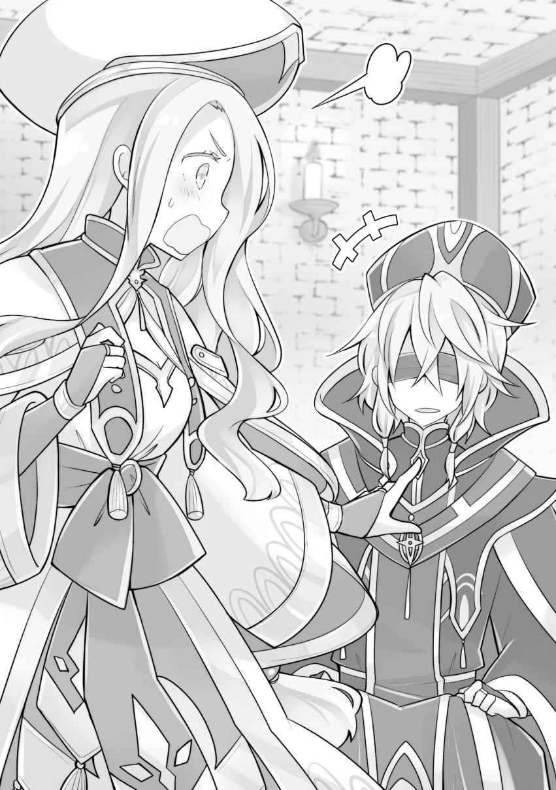
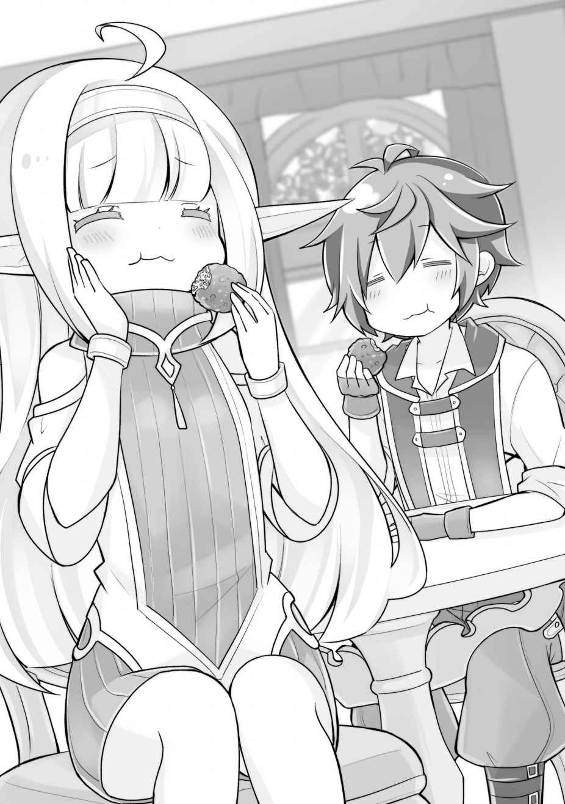

第一章
「……さて、どうしようか」
島に帰ってきた俺は、なりゆきだったとはいえ、想定を超えた事態に陥ったと頭を抱えた。妹を取り返しに行ったはずが、なぜか審問官ビーエと、アビスの姉妹機である人造人間のセレスティアルと、「眠り続ける男」こと守護聖人を連れて帰ってきてしまったのだ。
いや、あの場合は仕方がなかった。あの状況では、こうするしかなかった。
ビーエはまだ目隠し状態で拘束してある。セレスティアルは開拓村でエネルに預かってもらっている。そして、守護聖人はレンを見張りにつけて屋敷で軟禁状態。
守護聖人とセレスティアルの処遇に関しては、さしあたり焦る必要がないが、ビーエはいつまでもそのままにしておけない。妹がどこに行ったのかも訊き出さなければならないし、それ以外の情報も吐き出させる必要がある。
もちろん、守護聖人とセレスティアルのことだって考えなければならないが、俺の元々の目的は、妹──ルキアの奪還なのだ。そちらを、最優先で考えたいところなのだが……。
「悩んでますね、カイ様」
「んー、私もまさかこんなことになるとは、思わなかったからなぁ……」
「あの守護聖人……という方は、何者なんですの……？」
「私もぜんぜん知らないんだよ。なんか普通の人みたいに見えたけど」
後ろからユーリとローザの声が聞こえてきた。
一人で悩んでいても仕方がない。意見を訊くことにしよう。
「ローザ、ちょっといいか？」
「うわっ、びっくりした。気付いてたの？」
「そりゃ、すぐ後ろで喋ってれば気付くよ。それより、とりあえず今の状況からわかることってあるのか？ ルキアがどうなってるのか」
俺たちは、ローザがこの島に捨てられてからすぐに支度をしてルキアの救出に向かった。日数にして十日程度だ。
ローザは地下室で何百年も守護聖人に術を掛け続ける仕事をしていたといい、ルキアはその後任のはずだったのだ。
それが、ルキアは部屋におらず、守護聖人は目覚めていた……。
「それがねぇ。考えてみたけど、わからないんだよ。だって神殿は千年以上も守護聖人を眠らせ続けてたんだよ？ ルキアちゃんがヤケを起こして術を解いちゃって、それで連れてかれちゃったと考えるのが一番しっくりくる……。それくらいかな」
「連れてかれちゃったって……。それ、ヤバいんじゃないか？」
今、この瞬間、ルキアがどんな状況にあるのかなど知る術もない。
のんびりしている時間はないと考えたほうがいいだろう。
「いずれにせよ、ビーエ君が知ってるはずだから、締め上げて口を割らせよう」
「やっぱそれだよな。よし──」
「いえカイ様、落ち着いて。少しお待ちください」
ビーエを閉じ込めてある部屋に向かおうとした俺を、ユーリが手で制した。
「焦るお気持ちもわかりますが、ここは慎重になさるべきです」
「でも、そんなこといってる間にも──」
咄嗟に反論しようとしたが、俺の動揺を見透かすようなユーリの強い瞳で、言葉は遮られた。確かに、焦っても仕方がないのだが、逸る気持ちを抑えられないのだ。
「……なにを慎重にすればいいんだよ」
「ではカイ様。情報を得た後、あの男をどうなさるおつもりだったのです？」
「どう……とは？」
「解放するのか、それとも人質として使うのか。それとも……殺すか、ですわ。話をするということは、相手にもこちらの情報をある程度は知られるということなのですから」
「殺す……」
「そうです。殺すのであれば、こちらの情報をいくら開示してもいいでしょう。ですが、解放するつもりがあるのならば、こちらのことを知られるのは危険です」
「殺すことも選択肢に入れるべきと？」
「当然でしょう」
ユーリは毅然と言い切った。
俺は、正直そこまで考えていなかったのだが、確かに言われてみればユーリの言う通りなのである。殺してしまえば死人に口なし。俺達の秘密がバレる心配はなくなるのだから。
だが、ビーエはあの地下室で俺たちの姿は見ただろうが、俺が何年か前に自分で捨てたアラミラの祝福者だとは気付いていないようだった。気付かれていたなら、解放するのはリスクが高いが、そうでないなら問題ない。
「いちおう解放するつもりでいたんだが」
「ならば、情報を与えないことが大事になりますわね」
「そうだな……。素直にしゃべってくれればいいけど」
「殺すのであれば関係ありませんけどね」
「いや、殺さないから」
俺がそう答えると、ユーリはわざとらしく息を吐いた。
「やはり殺さないのですね。カイ様がそういう方だって、もう嫌ってほどわかってはいましたけど。ですが、あのビーエはカイ様をこの島に連れてきた張本人なのでしょう？ 憎く……ありませんの？」
「憎しみかぁ……。正直、別にないかな……」
ビーエは確かに実行犯ではあるが、悪いのはそのシステムを作った人間だろう。処刑された人間が処刑人を恨むだろうか？ たぶん、そういう心境にはならないのではないだろうか。そういう意味で、俺はビーエに対して憎しみを持っていない。
むしろ、ビーエが何を考えているかわからなくて怖い。
「それに、それを言ったらユーリだってそうだよ。実行者が憎いのなら、ファウゼルのこと、殺したいほど憎く思うんじゃないか？」
「……確かに、それもそうですわね」
ユーリは命令を下した帝国のことは憎く思っているようだが、ファウゼルやエドワードに対しては、特になにかあるという感じがない。悪いのは、命令を下した人間なのだとわかっているからだろう。まして、傭兵であるファウゼルを憎んでも仕方がないのだ。
「私はビーエ君のこと、ちょっと憎たらしいと思ってるよ！ そこそこ仲良くやれてると思ってたのにさ」
ハイハイと手を挙げたのはローザだ。
「ローザの場合は元々付き合いがあったわけだから」
「そうだよ！ それが顔色一つ変えずにポイだからね！ ビーエ君は人間じゃない！」
彼女は信じていた相手に裏切られたのだ。それで「ちょっと憎たらしい」程度で済んでいるのは、あるいは年の功というやつなのかもしれない。
いずれにせよ、俺はビーエを殺すつもりはない。でもどうするのかは、これから考える。
ローザに時を止めさせて、年単位で眠っていてもらうという手もあるにはあるが、それも含めてルキアがどうなっているのか次第だろう。
人質交換でルキアが帰ってくるなら、ビーエを返すことに否やはない。さすがに守護聖人をあの場所に戻すつもりはないが、ビーエなら返してしまっても問題はないのだ。
なんにせよ、ビーエから話を訊いてみることにしよう。
俺は一度屋敷の外に出た。
季節は春。ローザが島に連れて来られてから、まだ一ヶ月も経っていない。
数年前、最初はただの原っぱだったこの辺りも、今ではかなり村っぽくなってきている。
ただ、本質的に俺の能力さえあれば衣食住のすべてが賄えてしまうために、村人の生活モチベーションはそこまで高くないのかもしれない。
もちろん、地道な農作業や林業なども行われてはいるが、戦士君の労働力頼みなところがあるのは否めない。まあ、戦士君だって、村人のうちなのだし別にそれで問題があるわけでもないのだが。
今年も、地道に島を開拓し、防衛の為の施設も増やしていこうかと思っているし、島の北にある遺跡の探索もしたい。下水道も作ろうと思っているし、島民に娯楽も提供したい。
ひゅうと春のやわらかな風が吹き、頬を撫でる。
寒い寒い冬が終わり、これからしばらくは過ごしやすい時期が続く。
──運が良ければ、今頃は無事にルキアを奪還して、のんびりと島で過ごせたのだろう。
だが、そうはならなかった。
だからといって、終わったわけじゃない。どのように奪還するか、また作戦を練ればきっと上手くいくはずだ。これまでだって、それでどうにかなってきたのだから。
一度、屋敷に戻り、ビーエから情報を引き出すメンバーを選定した。
基本的に俺が話をするから、それほど人数は必要ない。アビスとレンとユーリ、あとはエドワード。レンは祝福の能力が効かないし、嘘が匂いでわかる。ユーリは盾を張ることができるし、エドワードは強力な魔法使いだ。
質問内容についても、ユーリとエドワードは俺のサポートをしてもらいたい。
軽く打ち合わせをしながらビーエのところに向かう途中、
「私も見ててあげる。もしビーエ君が嘘ついたら、すぐ教えるから」
と、ローザが同行を申し出てきた。
確かに、神殿内部のこととなると、ビーエが嘘を言っていた場合、見抜けない可能性がある。いくらレンが野生的嗅覚で嘘を見破れるといっても、絶対ではない。
まして、ビーエはなんとなく嘘が上手そうなイメージだ。保険は多いほうがいい。
ビーエは即席の牢屋に閉じ込めて、戦士君に見張らせてあった。
場所は、村からは少し外れた場所。まあ、万が一逃げられたとしても、ここは絶海の孤島。リーベルの能力ですぐに見つかるオマケ付き。捕虜にとっては最悪の立地に違いない。
「どうだ？」
「オサ！ オサオサ！」
戦士君がピシッと敬礼して状況を説明してくれる。
何を言っているのかはわからないが、どうやら変わりないようだ。
ビーエは目隠し状態で簡易ベッドの上で転がっている。外界の情報は与えていないが、ユーリの言う通り、話を訊くということは、こちらの情報も与えるということになる。
いっそ、こちらの正体を明かしてルキアとの人質交換に臨むというのも手ではある。ある意味、それが正攻法であるのかもしれない。ビーエは、ファーレー教でもかなりの地位にあるようだし、向こうが応じる可能性は高いだろう。
ただ、ルキアも世界にたった二人しかいない「時の神」の祝福者だ。万が一、向こうがビーエを切り捨てる判断をした場合、一気に詰んでしまう。
やはり、こちらの情報は与えずに情報だけを引き出すしかない。
俺たちが部屋に入ると、ベッドに横になっていたビーエは、やおら身を起こした。
レンがビーエの猿ぐつわを外す。目隠しは付けたままだ。
「こちらの質問にだけ答えろ。そちらからの質問には答えない」
俺はビーエが口を開く前に先制した。
「まず、名前を答えろ。所属と階級は？」
「ふう……こちらから質問できそうな雰囲気ではありませんね……。名前はビーエ・クラウザー。所属は中央司教座聖堂。特級審問官」
ビーエは淡々と答えた。嘘を言っている雰囲気はない。尋問に慣れている……というわけではないだろうが、憎たらしいほど落ち着いている。
「なんの祝福者なのか。神の名も答えろ」
「運命の神フォルトナの祝福者」
この質問にもビーエは躊躇なく答えた。珍しい神の祝福者だとは聞いていたが、運命の神とは……。フォルトナというのも、初めて聞く名だ。
「どういう能力だ」
「世界の未来を見る力」
「未来を……？」
え、ヤバくない？ じゃあ、こいつ今の展開になることがわかっていて、その状況に甘んじているのか？
「見えるのは世界の大きなうねり……未来だけですけどね。自分自身のことのような小さなことは見えません」
「本当か？」
「知っていて、こんな状況に陥る人も、なかなかいないんじゃないですか？」
横にいるレンが小さく肯く。とりあえず、嘘の臭いはしないらしい。かといって、どこまで信じていいものかわからないが、今は信じる他ないだろう。
世界の未来が見えるというその能力で、神殿でも若くして上位の地位に就いていると考えれば、辻褄も合う。少なくともその部分は嘘ではなさそうだ。
なぜ、これほど素直に喋るのかは解せないところだが……。
「あの部屋にいた、もう一人の男……あれは何者だ」
こちらはあの男が守護聖人だと知っているが、それを「知っている」と知られるわけにはいかない。守護聖人という言葉自体がトップシークレットなのだろうから。
「接触したんですか……？ 今、彼はどうしています……？ まさか、連れ出した？」
「質問に答えろ」
「彼は、世界の平衡の要石。私も詳しいことは知りませんが、この世界は彼抜きでは、バランスを崩してしまうのです。手ひどく扱ったりしていないでしょうね？」
「世界の平衡の要石？ なら、彼がこれからどうなるのかもわかるんじゃないのか？ 世界の未来が見えるんだろう？」
「…………」
口をつぐむビーエ。さすがに、守護聖人のことには口が堅くなるらしい。
まあ、守護聖人の秘密については、あとで本人から直接訊けばいい。
そうでなくても、千年以上眠らされていた人間にしか知り得ないことがあるのだろう。千年前のことを知ったところで、やれることなどないかもしれないが、神殿の秘密、場合によっては急所を知ることができるかもしれない。
「ところで、ここはどこなんです？ 体感ではほとんど移動していないはず……大聖堂の中……なのですか……？ ならば、やはり内部の犯行？」
「勝手に喋るな」
「解せないんですよね……。あの場所はファーレー教秘中の秘、まして彼のことを知る者など、数えるほどしかいないはず。それをこのタイミングで戦力を揃えて強襲してくるとなると、必ず手引きする者が必要……。まして、セレスを倒せるほどとなれば」
突然、べらべらと喋り出すビーエ。黙っていられない性分なのだろうか。
しかし……そうか。こいつはまだここが大聖堂の内部だと思っているのか。能力で瞬間移動したのだから、そう考えるのは当然なのかもしれないが、この勘違いは利用できる。
……それにしても、精神力が強い。
伊達に高僧をやっていないということか。目隠し状態で尋問なんて、ビビって小便漏らしかねない状況だろうに。
「……つまり、ローザが何らかの方法であなた方に情報を漏らした……。禁忌の島に人が住んでいた……と、そういうわけですか」
目隠し状態のままビーエは口角を上げた。ローザの名前が出て、一瞬反応しそうになったが、間違いなくブラフだろう。だとしても、すごい推理力だ。
……いや、それだけ神殿の情報統制体系は万全だったということだろう。タイミング的にも、ローザから漏れたと考えるのが自然……なのかもしれない。
だが、まだ問題にもならない。しらばっくれてしまえばいいのだから。
「なんでわかったの？ ほんとは見えてるわけ？」
「えっ！ ちょっと！」
ビーエのブラフを適当に誤魔化そうと考えていた矢先、俺の後ろで大人しくしていたローザが、思わずという感じで口を出してしまった。
絶対に喋らないように言ってあったのに！
「ほう。この声は、やはりローザでしたか。あの島に人がいたというのは誤算でしたが、私としても、あなたが死ぬことになるのには心苦しさを覚えていたので、良かったです」
「白々しいのよ！ どう考えたって殺すつもりだったじゃない！」
「ローザ、落ち着いて。ちょっと外に出てようか……」
「ちょ、まだ話は終わってない！ ビーエー！ ニヤニヤしてんじゃねー！」
喚き散らしながらエドワードに引きずられていくローザ。まさか、こんなことになるとは……。連れて来なければよかったが、後の祭りだ。あとで厳しく言っておかなきゃ……。
「……今の、なかったことにならないか？」
「さすがに知り合いの声はわかりますよ。それより、ローザを助けて下さり、ありがとうございます」
「自分で無人島に捨てておいて、それは白々しいんじゃないのか？」
それとも良心の呵責があったのだろうか。
「それもそうですね……。あれは、私の罪。命令とはいえ、酷い事をしました」
いまいち嘘臭いが、今はその善悪を語っても仕方がない。
……しかし、本当に冗談抜きで誤算だ。
こちらの情報を与えないで、向こうの情報だけを引き出すのが最重要だったのに、まさかローザがあんなに直情的だとは……。今更、スパイを疑うわけではないが、これでこちらの選択肢はグッと狭められてしまった。

ビーエを殺すという選択も、選ばざるを得なくなったのかもしれない。
「それで、今はこの大聖堂から逃げる方法を考えている……というわけですか？」
ビーエからすれば、犯人の正体を看破したりといったところなのだろうが……。
「勘違いするな、ローザが声を出してしまうのは誤算だったが、俺たちの関係性が変わったわけではないのだからな。こっちは、情報を知られたことで、お前を殺す方向でいく可能性もあるんだぞ」
しかし、ビーエはニヤリと余裕の笑みを見せ言った。
「私は人を見る目はあるつもりですよ、正義の人」
ビーエとは二回顔を合わせている。覚えられてしまっていたようだ。
俺はしばらく考えた。この島に人が住んでいることが知られる……それ自体は、遅かれ早かれだっただろう。では、問題があるとしたらどこか。
この島に人が住んでいてマズい理由といえば──
「お前たちは、去年あの島に子どもを捨てただろう」
「……よくご存じで」
「あの子は祝福者だった。左胸に聖印があるからな」
そう。この島は、アラミラの祝福者を捨てる場所なのだ。だから、そこに人が住んでいたらマズいのである。少なくとも彼らにとっては。
子どもを捨てている事実自体も当然悪い事だが、それを糾弾したところで、神殿には城壁に豆鉄砲を撃つ程度のダメージもないだろう。「邪神の加護を受けていたから」と説明するだけで、信者でなくともほとんどの人間は、そういうものかと納得してしまうはずだ。
「あの子に祝福を与えている神の名がわからない。その神の名を言え」
アラミラの名前を俺が知っていたのは、ほとんど偶然だ。ファーレー教にとって、アラミラが邪神なのだとしても、その祝福者は能力さえ得ていなければ無害なのである。
ちなみに、去年と限定したのは、「島に人間が住み着いた時期」を俺が来たより後、カエデが来る前だと推測させるためだ。あまり意味がないかもしれないが……。
「邪神の名を……ですか」
ビーエは俺の祝福の時も、小声で「邪神」と言っていた。アラミラがファーレー教で秘密裏に邪神扱いされていることは、そのことからも知っていたが……。
「邪神は、名を剥奪された神。……実をいえば、私もその名は知りません」
「名前を知らない……？ そんなことがありえるのか……？」
「ええ、すべての文献が抹消されていますから」
レンが首肯する。どうやら、本当に知らないようだ。
「まさか、邪神の祝福者を匿っている勢力があるとは、思いもしませんでした。反神殿派組織……いくつか思い浮かびますが、まだ活動しているところがあったんですね」
俺たちは別に反神殿派組織というわけではないのだが、神殿は各地の古い宗教を弾圧してきたという歴史がある。それゆえに、元々敵は多かったらしい。
なんにせよ、勘違いしてくれているのなら好都合だ。
「危険な神……なのか？ お前たちがその力を忌避するほど？」
「ええ。何百年も昔、邪神の加護を得た魔女と呼ばれる者が、神殿と敵対し大きな騒動になったと聞いています。……ああ、なるほど。騒動といえば、前に帝都のほうで騒動がありましたね。あれもあなたたちが犯人だったというわけですか。去年の邪神の祝福者は帝都のエドワード卿の愛娘でした。そして、あなたたちは彼女を保護している……と」
あの時、エドワードの側にいた二人の祝福者から事情を訊いていたのだろう。だとしても、すごい推察力だ。
ローザに加えて、カエデのことも知られたのは、明確に俺のミス。もっと上手く話を進めればよかったのかもしれないが、後の祭りだ。とにかく今はしらばっくれるしかない。
俺はビーエのこの言葉には返事をせず、次の質問をした。
「さて、ローザのことがバレたなら話が早い。あの男……守護聖人は今こちらの手にある。しかし、なぜ守護聖人は目覚めていた？ ローザが何百年も術を使って眠らせ続けてきたのではなかったのか？」
意図的にルキアの名前は出さない。まだ俺が三年前に捨てた「カイ」だとは気付かれてはいないからだ。まあ、ここまで知られたなら、名乗ってしまうのも手ではあるのだが、こちらの本当の望みを知られてしまうのはマズい。
ルキアの命を天秤にかけられたら、俺は無限にベットしてしまうだろう。
「守護聖人は元々目覚めさせる予定ではあったのです。聖都で千年祭があるでしょう？ あれは経典に沿った催しなんですが、そこに『千年後、神が復活する』という文言がありましてね」
「神？ どうみても普通の人間にしか見えないが」
「私も詳しく知りませんが、あの人はファーレー教の始祖に近い存在らしいんですよ。だから、神とか……あるいは神の代行者という扱いになるとかで。まあ、上層部でも起こすか起こさないか紛糾したらしいですけどね。起こした以上はなにかに使うのでしょう」
結局、起こした理由はわからないらしい。祭で使うためにわざわざ起こすというのは、わかるようなわからないような理由だ。
まあ、例えば前世で言うならミレニアムにキリストがガチで復活するような感じ……なんだろうか。細かいことはさておき、経済効果は凄そう。
しかし、すでに世界を牛耳っているに等しい神殿が、わざわざテコ入れする必要性も感じられない。やはり、別に本当の理由があるのか。まあ、守護聖人がここにいる以上、神殿の思惑はともあれ、実現しないのだから考える必要もないのかもしれないが。
それにしても、どうしてこんなにペラペラと素直に喋るのだろうか。守護聖人が始祖に近い存在だとか……喋っていいことなのか？ それ。
もちろん、ビーエは捕虜で、これは尋問だ。実はそれほど神殿に忠誠を誓っていないとか、拷問が怖くて喋るようにしてるとか、あるいは神殿の方針でもし捕まった場合は、喋ってもいいことになっているとか……理由はいろいろ考えられるが。
「嘘をついているのか？ こんなに簡単に口を割っていいのか？」
「まだ死にたくありませんからね。私が知っている程度のことでしたらいくらでも」
「忠誠はないのか……？ 神殿への」
「ありますが、私が知る情報を話したところで、大勢に影響ありませんから。それに、私がこうして捕まったのもまた、運命なのでしょう。つまり、答えようが答えまいが、その後の運命も変わらないということ。ならば、命を永らえられる選択を取るというだけです」
これは神殿への信頼……ということなのだろうか。多少、反乱分子が活動したところで、巨大勢力である神殿がどうにかなることはないという……。あるいは、なにも変わらないという「運命」が実際に見えているのか。
まあ、実際、俺たちも世界を混乱させたいわけじゃない。自分たちが安全に暮らせればいいのだから。ある意味では、俺たちの目的も「なにも変わらない」ことを目指しているともいえる。少なくとも、神殿を滅ぼしたいというような過激さはない。
「ところで、あなたたちは、あの島……禁忌の島に根城を張っているのですか？」
「そうだ」
「封印されし魔女のことは知っているのですか？」
魔女か。確かローザが言っていた。あの島には、かつて世界を混乱の渦に叩き込んだ『魔女』が封印されていると。
魔女が封印されている場所は、おそらく魔獣が近づけないなどの特徴があるはずだと。
そして、その条件に合う場所といえば、俺が島に来た時に安全地帯として命を繋ぎとめてくれた通称「結界の大樹」のところだ。
おそらく……いや、間違いなくあの大樹に魔女は封印されている。
まさか、自分から魔女のことを言い出すとは思わなかったが、俺が考えているよりも秘匿度が低い情報だったのかもしれない。
「詳しいことは知らないが、あの島に何か良からぬものが封印されているとは、ローザから聞いている。まあ、封印されているのなら問題ないんだろう？」
「いえ。上層部のほうで方針の変更がありましてね。倒そうという話になったらしく。ああ、実は『魔女』は、先程、話に出ました邪神の祝福者でして」
「魔女を……倒す？」
サラっと出てきた情報だが、これはかなりヤバい話なのではないのか？
魔女とは、俺たちの村の側にある「結界の大樹」に封印されている人物のことだろう。
ローザがまだ生まれる前、今から七百年くらい前に「能力を分け与える能力」を用いて、世界を混乱の渦に叩き込んだ人物……らしい。
「倒すということは、封印を解くのか」
「もちろん解きます。そして目覚めたところを叩く。そういう段取りだそうで。ですから、もし、あの場所で暮らしているというのであれば、退去することをお勧めしますよ」
どこまでが本当のことなんだ。どうして、俺たちのことを心配する？
魔女が復活するなら、俺たちが勝手に殺されるだけのこと。捕らえられたビーエが俺たちを心配する必要などないだろう。
レンから合図はない。ならば……すべて真実なのか。
「島から追い出すための嘘じゃないだろうな？」
「先ほども言いましたが、私が知る情報など、たいした価値はありませんよ。それに、あなたたちが魔女に殺されようと、あるいは逃げようと、私には関係がありません。……いえ、できればみんな生きて欲しいとすら思っています。こう見えても、聖職者なのでね。救える命であれば救いたい。そして、私のこともぜひ救っていただきたい」
ニヤリと笑って、そんなことを言う。
島に住んでいる者がいると知ったことで、とっさについた嘘……というわけではないのか。確認する術はない。だが……。
「神殿は、その魔女をどうやって倒すつもりだ？ 倒すことができなくて、封印したんじゃなかったのか。守護聖人を使うのなら、彼の祝福に関係があるのか？」
「守護聖人は関係ありません。死の神の祝福者の『神返り』を使うんだそうです。恐ろしいですね」
ビーエは、全く表情を変えず、他人事のようにシレっと恐ろしいことを言った。
死の神がどういう神なのかは知らないが（字面からしてロクでもないことは推察できるが）、神返りを使うということは、つまりその祝福者を殺す……あるいは、魔女にわざと殺させるということだ。
「そんな方法で倒せるのか……？ 何百年前かには殺せなかったんだろう？」
というか、守護聖人が関係ないなら、わざわざ起こす必要がないのでは。
「当時はいなかった三重祝福者を使うんだそうです。滅多に現れないんですよ？ 三重というのは」
「三重祝福者……？」
なんだっけ……。どこかで聞いたような……。
「でも、その三重祝福者が現在の『時の神の祝福者』でもあるんですよね。私としては、彼女を使い捨てるのは惜しいような気もするんですが……まあ、上の方針ですから」
「時の神の……祝福者……？ ローザの後任のか……？」
知らず、声が震えていた。気取られてしまったかもしれない。
俺は思い出していた。
俺の妹であるルキアが、三重祝福者だと。ローザがそう言っていたのを。
つまり、ルキアが魔女殺しの切札として使われるということなのか……？
ローザの後任として、地下室に閉じ込めようとしていたくせに、今度は自分たちの都合で殺そうというのか。
そして、そのために、守護聖人の眠りも解いた……そういうわけなのか。
「まだ神官になりたてなのに、可哀想ですね」
ビーエの、その何も感じていないような軽い口調に、一瞬、俺もローザのことを言えないくらい頭に血が昇った。
こいつは心底軽薄な男だ。まあ、そうでなければ、子どもを無人島に捨てる仕事はできないだろうから、まさに適材適所ということだったのだろうが。
そのくせ、なぜか妙に憎みきれないのは、身に纏った雰囲気のせいか。今までの人生で、前世を含めても、こいつのような人間は見たことがない。
それにしても、魔女の封印に『神返り』とは。
想像もしていなかったが、妙に納得している自分もいた。
神殿ならそれくらいのことはやるだろう。ある意味では、予想範囲内のことだし、まだ確実にルキアが生きていることがわかっただけで、むしろ良い状況であるのかもしれない。
生贄にしようとしているのなら、助けるまで。やることは逆にシンプルだ。
「それで、その魔女を復活させる作戦はあの島で行われるのか？ 島が戦場になる？」
「そうなりますね。だから、早めに撤退しておくことをお勧めしますよ。そうでなくても、あの場所はまだ大戦の影響が残っているのでは？ 人間が住める環境ではないと聞いてますけど」
「……どうだろうな」
──神殿は魔女を倒す為に、ルキアを生贄にしようとしている。
本当かどうかはわからない。ビーエが、俺がルキアの兄だと実は気付いていてブラフをかけている可能性もある。
どちらにせよ、ビーエからある程度は情報が得られた。
こちらも、ローザのせいで予定が狂ってしまったが、過ぎたことは仕方がない。
「今日はここまでだ。続きはまた明日に」
俺は話を打ち切って、小屋を後にした。
外に出て、小屋から離れてから、大きく息を吐いた。
はっきり言って、今回の尋問は失敗だった。ローザがこちらにいると知られてしまった時点で、かなりのことが相手側に伝わってしまっただろう。
特に、島と関連付けられてしまったのが最悪だ。カエデのことも知られてしまった。エドワード夫妻がここにいるということも、流れで推察されてしまうだろう。
だが悪いことばかりでもない。なぜか魔女を復活させようとしているという情報を得ることができた。あの場所に魔女が封印されていると、ローザから聞いた時から、いつかはそういう日が来るのかとは想像していた。だが、まさかこんなに早くだとは。
なにより、肝心なルキアの情報は得られた。
決して、良い状況ではないが、やること自体は変わらない。
どういう状況だろうが、ルキアは奪還するつもりだからだ。
「おつかれさま。ローザ君があそこで声を上げてしまうのは想定外だったけれど、話の内容的には良かったんじゃないか？」
外で待っていたエドワードが励ましてくれるが、どう考えても失敗だろう。
「エドワードさんに頼んだほうが良かったですよ。やはり慣れないことをするとボロが出ますね。結局、不必要な情報まで与えてしまいました。カエデのことも」
「あの流れじゃ仕方がないよ。あれ以上を期待するのは、高望みというものじゃないかな。軍の尋問なんて、カイ君よりも遥かに杜撰でいい加減なものだよ？ 口を割らせるためならムチ打ちだってするし」
そりゃあ、軍のやり方とは違うだろうけど。そもそも、うちは忍者の隠れ里みたいなポジションだから、存在を知られた時点で、失敗みたいなものだし。
「それに、別に彼自身に情報を与えてしまったとしても、別に問題にはなるまい？ あのビーエという男を返さなければいいだけなのだから」
「そりゃそうなんですが」
エドワードも、必要なら殺せ派か。
俺が甘いのだろうか。確かに返さなければ死人に口なし。最悪、時を止めて放っておいてしまえば、殺さずとも無害化しておくことができる。理屈としてはそうなのだが……。
俺にその選択ができるのだろうか。
島のみんなを守る為とはいえ、人ひとりの人生を奪うという選択が。
「……なんにせよ、重要な話が聞けました。裏が取れればもっといいんですが」
「もう一人、連れてきた彼のほうはどうかな。守護聖人と言ったか」
「わかりませんが……話はしてみるつもりです」
守護聖人が知っているのは、また別のことだろう。千年以上も眠らされていたのだから。
だから、彼に対しての接し方も、少し考えてからにしたい。
そもそも、守護聖人自身が、今が千年以上も未来の世界なのだと知らないのだろうし。
いずれにせよ、守護聖人からも話を訊く必要はある。神殿に返すつもりもないから、こちらのことを知られても問題にならない。これは多少、気は楽だ。
「ところで、ローザは？」
「ああ、あっちでユーリセシル嬢に絞られているよ」
エドワードが親指でクイッと肩越しに指さす。
見てみると、少し離れた場所でローザがユーリに説教されていた。かなり、きつく叱っているのか、ローザは地面に座らされ涙目だ。
……俺からも、叱っておかなきゃと思ってたけど、あれだけ言われたのなら、逆にフォローしてあげたほうが良いのかもしれない。
済んでしまったことを悔やんでもしかたがないのだ。後ろを向いている時間はない。
◇◆◆◆◇
ビーエに話を訊いた後。今度は守護聖人を軟禁している部屋へ訪れた。
「レン、どうだ？」
「死んだわけではないですけど、やっぱり長く寝かされてた後遺症なんですかね……」
扉の隙間から覗くと、男──守護聖人はベッドに横になり死んだように眠っていた。
実は、彼はこの島に来てからずっとこうなのである。
一応、念のために僧侶ちゃんに回復魔法もかけてもらっているが、別に健康に支障があるわけではないらしい。もちろん、何かの病気なのだとしても、我々ではわからないということもあるのだろうが……。
「話を訊こうにもこれじゃあな。ローザが言うには完全に術は切れているらしいし、起きるまでは様子見か……。じゃあ頼むぞ、レン」
「アイアイサー」
本当は、神殿関係の情報は早く整理して、次の行動を起こしたい。
なんだったら、守護聖人を無理やり目覚めさせて事情聴取といきたいくらいだ。妹の状態も、それほど良いものではないのだろうし、もしかすると、精神的に追い詰められて自決……なんて可能性もないわけじゃない。
焦っても仕方がないのかもしれないが、焦らずにいられる状況ではなかった。
守護聖人を保護している場所は、王城の一室。
長い眠りから覚めて、そう何日も経っていないはずだが、連れてきた当日は食事も好き嫌いなく食べ、体調的には何も問題がないようだった。
だが、その日の夜に眠ってから、丸一日以上目覚めていないことになる。
とりあえず、祝福の通じないレンに世話をさせているが、守護聖人は俺と同じ「アラミラ」の祝福者である。左胸の聖印が、俺と同じであるのをレンが確認している。
どういう能力なのかは本人に訊くしかないが、守護聖人が「時の神」の能力でずっと眠らされていたのは、当然その力が関係しているのだろう。なにが飛び出すかはわからないが、アラミラの祝福は予測が付かない。そもそも、俺の能力ですら、口で説明するのは難しい力なのだから。
「それにしても、魔女の封印か……」
屋敷から少し歩いて、結界の巨樹の根本に腰を下ろす。
魔獣が近寄ることができないのだから、なにか特別な木なのだろうとは思っていたが、魔女……つまり人間が封じ込められているとは考えてもみなかった。
この場所に、どうやって魔女が封印されているのかはわからない。幹をぐるっと調べてみても、人体が埋め込まれている様子はない。あるいは土中に埋められているのか。
「封印を解くと、土の中から這い出てくるのかな……」
ホラーだ。魔女ってのはゾンビかなにかなのか。
ローザの話では、魔女は数多の能力を身に宿し、しかもその能力を人に分け与えることができたらしい。薬の神や、癒しの神の能力者が増えるのは、いい事なのかもしれないが、祝福というのは安全な力ばかりではない。
眠りの神の祝福のように、相手を眠らせたり洗脳したりする力だってある。そういう意味では、神官という地位を与えて、全員を管理している神殿は、やりかたとしてはマトモだと言えた。能力者が野放しでは、治安を維持するのも難しいだろう。
さらに問題は、魔女が持つ「能力」の範囲。
もしかすると「アラミラの能力」も含む可能性がある。というか、そうでなければ無敵に近かった説明がつかないだろう。ファーレー教十三神のすべての能力を知るわけではないが、いちおう戦闘能力はないことになっているし（死の神なんてのが出てきたから、だいぶ眉唾ではあるが）、十三神すべての力を持っているのだとしても、ちょっと無理がある気がする。
「うーん」
「……あの、カイ君……」
「ん？」
急に後ろから声がして振り返ると、所在なげにローザが立っていた。
こんなに至近距離に近づいてきているのに、全く気付かなかった。
実は、時を止めた世界で自分だけ動く能力とか持っているんだったりして……。そんな力持っていたら世界を取れるぞ。
「どうした？」
「その……私、まだカイ君に謝ってなかったから。……ごめんっ！ 怒ってる……よね？」
ペコンと深く頭を下げると、ローザの金糸のような長い髪が地面に着きそうになった。
なるほど、さっきビーエに啖呵を切ったことを気にしていたようだ。
「怒ってないよ。まあ、さすがにビックリしたけど」
「ごめん……。ついカッとなっちゃって……」
「けっこうユーリに叱られたのか？ あいつ、年上相手でも容赦ないからなぁ」
「ううん、私が悪かったんだ。この島のことも、カイ君がどれだけ苦労してきたのかも知りもしないで、あんな軽率なことしたんだから」
実際、ローザは何百年も神殿のあの狭い部屋だけで生きてきたのだ。いきなり連れてこられた島でのルールにまで考えが及ばなかったとしても仕方がない。
まだしっかり話していなかったし、どちらかと言えばこちらの落ち度だ。
むしろ、なぜローザがああいう行動をとる可能性を考えなかったのか。迂闊だった。
「ローザがビーエにやられたことを考えれば当然だよ。まあ、ビーエにある程度知られちゃったとしても、どうにでもなるからさ。ローザはこれから気を付けて」
「許してくれるの……？ 海に放り出さない……？」
「許すもなにも、最初に言ったけど怒ってないから。ってか、なんなの海って」
「ユーリさんが、今度やったら翼人ブランコからの空中散歩で海にドボンって……」
「怖っ。脅しがシャレになってない」
未だに翼人ブランコが怖い俺にまで大ダメージ！ ていうか、翼人が飛ぶ高度から落とされたら海とか陸とか関係なく死ぬからね。
「……ただまあ、ユーリは俺よりももっと現実見えてるから、厳しく言ったんだろう。嫌わないでやってくれ」
人数が少ない上に、どこにも逃げ出せない孤島なのだ。人間関係の悪化から、孤島連続殺人ミステリーに発展というのだけは勘弁願いたい。
「嫌うなんてことあるわけないよ！」
「そうなの？」
「私にとっては、本当に久しぶりにできたお友達なんだから。ユーリさんて、ほんと美人で賢くって、憧れちゃうんだよなぁ。優しいし、お茶に誘ってくれるし」
「そうなんだ」
いつのまに……。
さすがは元プリンセス。コミュニケーション能力オバケですわ。
でもまあ、ユーリがそうやって仲良くしてくれると助かる。ローザは新参者だし、なじむのに時間が掛かるかと思われたが、ユーリが気にかけていてくれれば問題ないだろう。
「さっきのことは怒ってないけど、一つだけ訊いてもいいか？」
「うん」
「ローザは、ビーエに復讐したいか？」
なぜこんなことを訊いたかと言えば、俺自身はビーエのことをそれほど憎く思っていないからだ。自分自身の感情よりも、島の将来や立場のことを考えてしまっているからなのか、それとも性格が変なのか、あるいは転生者特有の達観なのかはわからないが、とにかくビーエ個人に対してそれほど強い悪感情を抱くことができないのだ。
あるいは、それがあの男をあの若さでファーレー教上層部にまで食い込ませた力なのかもしれない。あれだけ酷いことをしている人間に対して、憎めない奴と感じてしまうのは、自分のことながら不思議だった。
「うーん、あの時はムカッ腹が立ったけどね。ビーエ君があんまりヘラヘラしてるから。でも復讐したいってほどでもない……かなぁ」
やはり。運命の神の祝福者だと言っていたから、こう運命の神的なものに愛されているのか？ 運命以外に殺されることがない的な……。いや、考え過ぎか。
「あ、でも、酷い目に合わせてやりたいとは思ってるよ？」
「そうなの？ どんな？」
「そりゃ、空中ブランコから海にドボン！ とか」
そう言って嗜虐的な笑みを浮かべるローザ。
殺すのはダメだが、ビーエのあの余裕そうな笑顔を恐怖で引きつらせてやりたいという願望はなんとなくわかる。可愛い嫌がらせなら百種類くらい実行してやってもいいかもしれない。
今までこの島に放置され殺された子どもたちの鎮魂という名目で。
◇◆◆◆◇
「マイロード、守護聖人が目覚めました」
レンがそう報告に来たのは、彼を島に連れてきて三日目のことだった。
もしかしたら、このまま目覚めない可能性すら考えていたので、胸をなでおろした。
さっそく聞き込みといきたいところだったが、彼自身もまだ本調子ではないだろうと、食事の後にレンが同行し軽く散歩をさせ、午後から話を訊くことにした。
俺は遠くから散歩の様子を確認したが、守護聖人はとても落ち着いた様子で、変に取り乱したり逃げようといった素振りは見せず、遠目に果樹園や畑の様子を眺めていた。
すぐに接触してもよかったが、彼自身の祝福の能力がわからない為、接触するのはレンだけに留めてあったが、話を訊くとなれば俺自身でなくてはならない。
「じゃあ、レンは後ろに控えていてくれ」
「他のみんなには声を掛けなくてもいいんですか？」
「守護聖人の持っている秘密は、もしかすると刺激が強すぎる可能性があるからな。全然、バカバカしい能力の可能性もあるけど、それなら千年以上も秘匿する必要なんてないんだし……。まあ、たぶん……かなりヤバいブツが飛び出すと思う」
「では、内緒で？」
「とりあえずはな。内容的に教えてもよさそうなら、みんなに伝えることにするよ」
なにせ、守護聖人は「アラミラの祝福者」なのだ。
俺の『てのひら開拓村』もカエデの『仮初の命』も、かなり特異な能力だ。
アラミラの祝福者はだからこそ、子どものうちに島流しにされるのだろうから、この守護聖人の能力もかなり危険──ではないかもしれないが、特異なものに違いないだろう。
本人は温和そうだし、そう危険な能力でないと思いたい。希望的観測に過ぎないが。
「起きてますか？ 入りますよ」
俺は静かにノックをした後、返事を待たずして部屋に入った。
守護聖人は椅子に腰かけて、窓から外を見ていたようだった。その顔は、まるで表情筋が抜け落ちたかのように、ただ穏やかに澄んでいる。
「起きているよ。今日はあの服を着ていないんだな」
あの服……？ 俺が守護聖人と前に話したのは、あの地下室だ。
あの時は着ていたのは確か──
「神官服ですか？ あれは潜入する為に変装で着ていただけですからね」
俺がそう答えると、守護聖人は片眉を上げ「おや？」という表情をした。
変装という言葉がよほど意外だったのかもしれない。
「君は何者だ？ どうして私を連れだしてくれたんだ？ 私の家族は無事なのか……？」
守護聖人の質問に俺は戸惑ってしまった。もしかすると、顔に出てしまったかもしれない。この島に来てからも落ち着いた素振りを見せていた守護聖人だったが、彼自身はもしかすると、島に連れられてきた時の俺やカエデのように、神官でも聖人でもなんでもない一般人だったのだろう。そうでなけば、最初に家族の無事を確認しようとはしないはずだ。そして、なにより残酷なのは、彼自身、やはりこの世界が千年後の世界だとは、どうやら知らないらしいということだ。ずっと眠らされていたのだから、当然といえば当然であるのだが、俺はそのことに改めてショックを受けた。
彼の家族は、無事もなにも、もうとっくにこの世を去っている。あるいは、数世代後の子孫が残っている可能性はあるだろうが、そんなものは他人と同じだ。慰めにもなるまい。
俺は、そのことをどう説明したらいいのかわからず、別の質問を返した。
「あの、あなたの名前、もう一度ちゃんと聞いていいですか？」
気を取り直して、一つずつ確認していく。
「ああ。そういえば、しっかりとした自己紹介はしていなかったな。私は、創造神アラミラの使徒の、アーサー・ウィリアムズ・ファーレー」
「…………！」
おそらく、驚きが顔に出てしまっていただろう。
守護聖人は、なんということでもないかのように「アラミラ」と、その名を口にした。
しかも「創造神アラミラの使徒」と。
つまり、古代……千年以上も前は、そもそもアラミラの名は秘密ではなかったということなのか。
しかも「創造神」だ。
アラミラがいったい何の神なのか？ 長年の疑問だったが、これが、その答えなのだろう。人によって違う祝福の内容も、一から「創造」する神なのだとすれば、しっくりくる。
そして、なにより「アーサー・ウィリアムズ・ファーレー」という名前。
ファーレー教の名前の由来は「主神ファーレー」にある。主神ファーレーと、十三の神々。そしてその神々の恩寵を受けた祝福者。
彼は、その主神と同じ名だ。
名前のほうも、なるほど、あの大聖堂の名前が「聖アーサー大聖堂」だったはず。つまり、あの大聖堂は彼を祭るために建てられていたということだ。
神殿の歴史にあまり詳しくないから、同名の別のアーサーさんの可能性もなくはないだろうけれど。
「能力は『彩の神々』」
「……え？」
続けざまに能力名まで躊躇なく口にした。
さすがに、これには俺も声が出てしまった。
全く、なんの逡巡もなく、当たり前のことのように自己紹介の中で、流れるように口から出たという感じだった。
もしかすると、彼の時代では自己紹介に能力を含めるのが普通だったのかもしれない。なにせ、千年以上も前の人なのだ。常識なんて違っていて当然なのか。
「聞いたことはない？」
「ないですね」
「おかしいな……。私の能力はもうほとんどの人が知ってるものと思ったけど……。あまり、情報が入らなそうな場所というのも関係しているのか」
アーサーがチラリと窓の外を見る。
なるほど、この島はドが付く田舎だ。情報が入らなそうな場所であるのは間違いない。
「能力名だけじゃわからないか。ちょっと……いや、かなりかな……変わった力だから」
「……そうですね。どういう力なんです？」
能力の内容を教えてくれるのなら、否はない。
俺は、その能力名と彼の名前に、想像を遥かに超えたなにかを感じ取っていた。
──そして、その予感は当たっていた。
彼は、「説明が難しいのだけど」と前置きをしてから答えた。
「私の力は、アラミラの使徒と同じように、私自身が考えた神々の使徒を生み出す力なのだよ。といっても実際に私が考えた神々の使徒を、まだ一度も見たことがないんだから……アラミラも変な能力を授けたものだよ。誰が恩寵を授かるかまで偶然なのだから」
「考えた……神々……ですか？」
「ああ、十三の神を考えたんだが、君は見たことがある？ 使徒とは区別する意味で『祝福者』と名付けたんだけど」
……ヤバいものが飛び出すかもしれない。
そういう予感はしていた。
千年以上も存在を秘匿され続けた存在なのだ。ファーレー教にとって、特別な秘密を内包しているだろうと、理解していたつもりだった。
守護聖人という呼称は、この世界を「守護」する聖人という意味なのか。
いや、それすらも仮の名前にすぎないだろう。
「──主神ファーレーと……彼の眷属十三の神々……」
知らず呟いていた。守護聖人アーサーは、まさしくファーレー教にとって「主神ファーレー」そのものなのだ。
殺さずに、ずっと時を止められていた理由。生かしておかなければならなかった理由。
その謎が解けてしまった。
この世界で生を受けると一定確率で出現する「祝福者」。左胸の上にその印である「聖印」が浮かび上がり、神の名を呼びかけることで、その異能を身に宿すことができる。
そのすべてが、この目の前の男の「アラミラの祝福」に起因したものだというのか。
「あなたはなぜあの場所にいたのですか？ 自ら志願したということは……？」
ファーレー教の繁栄のために、人身御供として、あの場所で眠っていた可能性もある。むしろ、そうであってくれたなら──
「……？ なぜそんなことを訊く？ 知っていて助けてくれたのではないのか……？」
助けるという単語が出た時点で、志願した可能性は消えた。
もしも、自ら志願してあの場所にいたのなら、戻すこともやむ無し。
そう考えていたのだが。
「いえ、知りませんでした。偶然です」
「そうか……。まあ、それも仕方がないのだろうな。私はあの場所に十年近く監禁されていたのだ。なんにせよ、礼を言うよ。助かった」
「いえ……」
俺はどう返事をしていいのか、わからなかった。
十年近く監禁。彼はそう言った。
監禁されていた期間は、実際には十年どころではない。そんな数字は誤差の範囲になってしまうような年月。
厳密に何年か知っているわけではないが、およそ千年前の聖魔大戦では「祝福者」が戦ったと記録にある。ということは、最低でも千年。
もしかすると、もっと昔。
……いや、そもそも彼がファーレー教そのもの。言ってみれば開祖のようなものなのだ。その時期は、まさにファーレー教が生まれた頃ということになるのだろう。
そして、彼はまだ今現在が遥か未来の世界であると知らない。
「ファーレー教という言葉に聞き覚えは……？」
「ファーレー？ 私の名はファーレーだが、宗教を立ち上げた記憶はないよ」
「では、あなたを監禁したのは誰なのですか？」
「……アラドーロの連中だ。君たちの暮らしを見て、私は彼らの仲間ではないかと訝しんでいたのだが……どうやら違うようだな」
「アラドーロ？ 知りませんね」
なんだアラドーロって。本当に全く聞いたことがない名前。
人名なのか、それとも組織名か？
「知らない？ 知らないはずがないだろう。あれだけのテロを起こした組織を知らないというのか？ ……いや、こんな生活をしているのなら、知らないということもあるのか？」
「テロですか。すみません、世事に疎くて。どういう組織なんです？」
「科学を嫌い、人は自然と共に生きるべきという自然崇拝を是として、魔術や術理を否定した教義を掲げた新興宗教だよ。世界中の魔力安定化装置の破壊を宣言して、いくつかの都市を襲撃したんだ。アラドーロの賛同者は意外なほど多かったらしいよ。まあ、それからどうなったのかは、監禁されてしまっていたから知らないのだが、君は知らないのか？」
「…………」
どうなったのかなんて、わからない。
わからないが、アーサーを監禁した組織は、名前をファーレー教と改め、世界を席巻したというのは事実だ。そこまでに、どんなドラマがあったのだろう。
トップが変わったり、教義が変わったり、いろいろあったのかもしれない。千年も同じあり方を続けられたとは思えない。だから、現時点での事実は「祝福者を一括管理し、アラミラの祝福者を邪神認定して殺す」そういう組織だ。
「魔力安定化装置ってなんですか？」
「うん？ そんなことも知らないのか？ 私としては、君たちのことに興味が出てきたよ。今時、子どもでも知っているだろう？ あれのお陰で才能のない者でも魔術を使うことができるのだから」
「才能のない者でも……ですか？」
「そうだな。私はアラミラの使徒だったから、魔術の練習はしなかったが、本来は才能がないものには魔術は使えないものらしい」
「なるほど……」
答えながら、俺はもう限界だった。
アーサーが喋る内容は、本当にとてつもなく、俺一人では抱えきれないようなものだった。
アーサーがアラミラ以外のすべての祝福を作った。
この世界は千年かけて、祝福者なしではどうにもならないほど、システムができあがってしまったのだ。光の神や真実の神なんかは、いなくてもどうにかなるだろう。だが、俺の知る中でも「癒しの神」と「薬の神」だけは別だ。祝福者頼りでやってきて、医療なんてほとんど進歩していないのだから。
どうすりゃいいんだ。頭がこんがらがってくる。本当にどうしたらいいのかわからない。
「どうしたんだ……？ そんな苦しそうな顔をして……。体調が悪いのではないのか？」
アーサーに心配されるほど、顔に出ていただろうか。
ちょっと重たい真実を聞かされて、具合が悪くなっただけだから大丈夫──などと言えるはずもない。千年以上も監禁され続けて今まさに未来で目覚めてしまった男より、ヘヴィな状況はそうはない。俺が置かれた状況など、可愛らしいものだ。
「とりあえず、今はゆっくりして下さい。欲しいものがあったら、誰かに伝えてくれればいいですから」
「あ、ああ。ありがとう。できれば、妻子に連絡を取りたいのだが──」
「……それも善処します」
俺はそれだけ言って、逃げるように部屋を出た。
部屋を出て、しばらく俺もレンも無言のままだった。
どこに行こうとしていたわけではない。ほとんど無意識のまま、気付いたら結界の大樹のところまで歩いていた。
そのまま、木の根元に腰を下ろし、膝を抱える。
「ヤバいもん飛び出しましたね」
「飛び出したなぁ……」
遠く、水平線を眺めながら、これからどうしたらいいかを考える。
考えなければならない……のだが、頭の中はほとんど真っ白だ。
アーサーの祝福の内容は、俺の想像を遥かに超えていた。それで、つい、途中で話を切り上げてきてしまった。
「ちょっと、いちおうレンに確認しておきたいんだが……つまり、アラミラ以外の祝福者はすべて守護聖人……いや、アーサーの『アラミラの祝福』の能力によって生み出されている……そういう認識で間違ってないんだよな……？」
「わたくしちゃんにも、そういう意味に聞こえましたけど……」
「じゃあ、アーサーが死ぬと祝福者たちは能力を失って普通の人になる……だから、神殿はアーサーを捕らえて永遠に生き永らえさせていた……ってことなんだよな」
「そういうことだったんでしょうね」
「そうだよなぁ……。そういう意味しかないもんなぁ……」
レンと答え合わせをしてみても、結論は同じだ。
「現在の神殿は……アーサーの能力のことは当然知っていて、監禁してたんだよな……？」
「ん、まあ普通に考えれば。とはいえ、上層部以外には伝わっていないでしょうね」
時止めの術で時間を止められると、時間の流れが止まるうえに「破壊不能」になる。
つまり、アーサーの能力を維持し続けるうえで、時止めの術はこの上ないものだっただろう。しかも、時の神の祝福者もまたアーサー自身が能力で生み出したものなのだ。つまり、自分の能力で生み出した祝福者によって、千年もの眠りにつかされていた……。
そういうことになる。
ある意味では、アーサーはファーレー教の主神ファーレーそのものだ。
神殿の教義には、主神ファーレーの下に集った盟友十三神によって、世界の平和が保たれているとある。主神ファーレーがいなくなれば、当然その盟友たちもいなくなるのだから、ある意味筋が通った教義であるのかもしれない。
「マイロード……。これからどうします？」
「妹を助ける。そこまでは決定事項だが、アーサーのことは……正直……どうするのがベストなんだろうな……」
普通に考えれば、アーサーの人生はアーサー自身のものだ。
今まで、神殿に奪われていた時間の分まで、自由に過ごしてほしいという気持ちはある。
だが、彼の能力はすでに世界全体にまで及んでしまっている。
祝福者は、ファーレー教という組織の核。まさにファーレー教そのものと言ってしまっても過言ではないのだ。
彼が生きている間はいい。だが、死んだ後どうなる？
ほとんどの神の能力は大して影響ないだろうが、「癒しの神」と「薬の神」だけは別だ。この二つが一瞬で消えてなくなったら、祝福者の力に甘えて医療がほとんど発展していないこの世界では、病気やケガに対してほとんど無力になるだろう。
あるいは、それが正しい人の道である……と言うこともできるだろうが……。
「悩ましいなぁ！ 俺の手に余る能力だよ、アーサーの祝福は！」
「じゃあ、神殿に守護聖人を返すこともありえる……ってことですか？」
「いや、さすがに返すつもりはない。かといって、またずっと時間を止めておくつもりもない。だから……そうだな。普通に生きてもらって、普通にいつか寿命を全うする。それしかないんだよな」
つい、その力の大きさにビビってしまったけれど、だからといって、彼の人生を尊重しないでいいわけではないのだ。少し考えればわかることである。
「守護聖人がいなくなったことで、世界がどういう風に混乱するかはわからない。もしかしたら、争いが増えたり、不幸になる人が増えることもあるんだろう」
「マイロードは、それでもそれを選ぶってことですか？」
「元々歪んでいたものを正すだけなんだからな」
可能性の一つとして、神殿と交渉するというものはある。
今のところ、ビーエと守護聖人をこちらが捕らえていることは、神殿には知られていないはずだ。あの地下室に訪れる人間はかなり少ないだろうし、そもそも俺の能力でテレポートしたのだ。そもそも、あの場所から人が出たという発想にすらならないだろう。
だから、まだ交渉が発生する状況にない。こちらから、持ち掛けない限りは。
「難しい顔してますね。マイロード」
「ん？ ああ……、どうすりゃいいんだろうと思ってな。究極的には、守護聖人のこともビーエのことも神殿には悟られてないはずだろ？ いなくなったことにはいずれ気付くだろうけど、誰がやったのかなんて、わかるはずもない。だから、バレずにルキアだけ奪還してしまえば、いちおうこっちの望みはすべて叶うんだよ」
こちらは、神殿にも誰にも島で暮らしていることを知られたくないのだ。ビーエには知られてしまったが、これは返さなければ済む。
ルキアとの人質交換で使えるかなとも思ったが、それをやるリスクは大きい。
それより、強引に奪い返したほうがいいような気もする。もちろん、それだってリスクは大きいだろうけれど、俺たちの戦力ならやれるのではないだろうか。これは決して自惚れではなく、世界でも最強に近い力を持つ人間が、複数揃っているのだから。
アビス、レン、エドワード、ファウゼル、サラ、カエデ、そして俺と戦士君たち。たぶんこれだけでその気になれば、小さい国なら落とせる。中でも巨大なゴーレムを生み出せるカエデの力は大きく、どれだけ堅牢な城でも簡単に落とすことができるだろう。
……まあ、もちろんやる気はないけれど。
「魔女の復活のことはどうするんです？」
「それなんだよなぁ」
先ほどの案を採用できない理由はそこにあった。
この島に魔女が封印されているという。今まさに、この場所に。
「神殿は、ルキアを奪われても、計画通りに魔女の封印を解くのかな」
「白紙にするんじゃないですか。妹ちゃんを切札として使うつもりなんでしょう？」
「となると、さっさとルキア奪還に動かなきゃだな」
時間的な猶予がどの程度あるかわからない。とりあえず、方針をみんなに伝えることにしよう。ルキアを探しに、もう明日には出る。普通に考えれば聖都のどこかにはいるだろうから、リーベルの力で探し出すことができるはずだ。
「あの人の能力のことはどうするんですか？ 話します？」
「……話すしかないだろうな。いずれにせよ、アーサーをこの島の一員として遇するなら、みんなには話しておかなきゃだろ」
ヤバい内容には違いないが、アーサーの能力は逆にデカすぎて知らせておくべきものと判断した。知ったからといってどうすることもできない上に、本人はまるで無力なのだ。
とりあえずの方針は決まった。
俺は主要メンバーを集めて、守護聖人の祝福と、今後の方針を話した。
魔女の封印のこと、守護聖人のこと、妹のこと。
みな一様に驚いていたが、それは当然だろう。この世界の常識そのものが否定されたようなものだ。
中でもユーリとリーベル、そしてローザにとっては衝撃だっただろう。三人は「ファーレーの祝福者」なのだから。
一通り話したあと、実際の作戦会議に移る。
といっても内容は簡単だ。明日、前回と同じように聖都で妹を探して奪還する。リーベルの「探し物の神」の能力頼みとなるが、名前がわかっている人間一人だ。難しいミッションではないはず。
「カイ君。作戦そのものはシンプルだし、私も賛成だが……もし、ルキア嬢を奪還できなかった場合はどうする？」
最初に手を挙げたのはエドワードだった。
いきなり失敗した場合の話から入るのは意外だったが、それが彼の戦術の考え方なのだろう。あらゆる状況を想定して、どう動くかを考えておくのは大切だ。想定外の事態はいつだって起こりえる。まして、情報が少ないならなおさら。
成功した場合は、島に連れてきて一緒に暮らす以外にないというのもあるだろうが。
「失敗した場合は撤退。次の案を考えましょう。『神殿と交渉する』か『島にルキアを連れて来たところを奪還、魔女はこちらでどうにかする』の二択になるのかなと思いますが」
「魔女か……。今、この島の戦力でなら倒せないのかな」
「わかりませんが、不確定要素が大きすぎますね。あと殺すと、神返りが発生するので殺すことはできません。あくまで無力化するという話になります」
魔女の能力が「祝福の能力」のみならば、レンや戦士君が戦えばおそらく勝てる。レンと戦士君には祝福の能力が一切効かないのだから。
これは、この島にしかない特別な戦力であるといえる。
特にレンの力は突出していて「単体戦力が高く、肉弾戦も魔法戦もできる」「魔法が魔力依存じゃない」「祝福無効」というチート級の能力を三つも持っている。魔女がそれを超える力を持っていない限りは、戦闘になったとしてもこちらに分があるといえた。
「ただ、魔女についての正しい情報がない状況では、どうしても冒険にならざるをえないですね。もしかすると、我々の想像を超えたバケモノである可能性もあります」
今、俺がわけのわからない能力を持っていること。レン一人とっても、異常な力だ。
だが、それは唯一無二の自分だけに与えられたものではないということを、理解していなければならない。
魔女はアラミラの祝福者だ。
俺、カエデ、アーサー。知る限りだけでも、アラミラの祝福者の力は突出している。
そして、魔女は間違いなくその力を使いこなしているはず。
魔女を封印するまでに、どれだけの戦いがあったかはわからないが、「倒しきれずに封印した」という事実は重く受け止めたほうがいいに違いない。
「では、交渉をする……そういう解釈でいいのかい？」
「それに関しては、みんなの意見を訊いておきたいところですね。みんな、どう思う？ こちらには、交渉に使えるカードがある……。アーサーさんは、使うつもりはないが、少なくともビーエは使えるだろう。ああ見えて、神殿ではトップに近い立場らしいから」
「では、いいですか？ カイ様」
手を挙げたのはユーリだった。
ユーリはかなりちゃんとした考えを持っている女性で、こういう時には頼りになるけれど、意見を出してくれるのは、元モンディアル公国の人たちの中ではユーリとサラぐらいのものなのが気になっていた。元王女であるユーリに気を使っているのかも。こういう時に発言する人はどうしても限定されてしまうものなのかもしれないけれど。
「どうぞ」
「交渉する場合、どのように交渉なさるつもりなのです？ 先ほどのお話では、ルキアさんは魔女討伐の切札として使われるということでしたが、それならば相手はルキアさんを手放すことはないのでは？ そうでなくても、要するに人質を突き付けてこちらの要求を通すのは難しいかと」
「それは交渉してみなければわからないんじゃないか？」
「いえ、相手が正体不明な存在であるならば、相手の要求を飲まないのは政治の基本ですわよ、カイ様。対等な交渉は、あくまで信頼関係があるから成立するのです。むしろ、こちらがルキアさんを欲していると知られるリスクのほうが遥かに大きいでしょう」
なるほど、一国の王女をやっていたユーリに言われると説得力が違う。
薄々、そんな気はしていたのだ。こちらは、言ってみればテロリストみたいなものだ。前世でもテレビで何度も「テロリストには屈しない」というフレーズを見た記憶がある。交渉などと格好つけているが、結局は人質を取って要求を通そうとしているだけなのだ。
俺達自身が、どれだけ大義があると信じていたとしても、それはあくまで俺達の倫理。神殿サイドからすれば、そんなものを信用する義理はないのである。
「じゃあ、交渉は難しいか……」
「そうですわね。こちらは立場が弱いですから……」
一瞬、交渉は無理かとあきらめかけたが、別のところから声が上がった。
「ん？ そんなこたぁねぇだろう。お姫さんは頭が硬えな」
ファウゼルである。
「なにか案があるのか？」
「相手はこっちのことがなんにもわかってねぇんだろう？ だったら、どうにだってやりようがあるじゃねぇか。別に、真正直にこっちのことを言わなくてもいいんだぜ？」
「そりゃそうだろうが、どっちにしろ信用されなきゃダメだろ」
「おいおい、頼むぜ大将。こっちはこちらの望みが叶えばそれでいいんだから、別に信用される必要なんかないだろう。こういう時は相手に『利用できる』と思わせればいいんだよ。ちょっとバカな感じに振る舞ってな。相手はデカい組織で、自分たちの優位を疑いもしねぇんだから──ん……？」
ファウゼルはそこまで言い掛けて、途中で突然言葉を止めた。
瞳を閉じて、なにかに意識を集中している。
「なんだ？ どうしたんだ、急に」
「しっ！ ちょっと待て……変だぞ……」
言い掛けた俺の言葉をファウゼルが手で制す。
「……マスタ。魔力の感じが変。たぶん、木のところ」
「嬢ちゃんもわかるか。エドワードとサラ嬢はどうだ？」
「ああ。これは……つまり、そういうことなのかな？」
「私でもわかるくらいだし、そうだろう」
魔法使いたちが口々に異常を訴える。つまり、どういうこと？
「木って、結界の大樹のところか？」
「位置的に……そうみてぇだな。あの場所に魔女ってやつが封印されてるんだったか……？ まさか、いきなり封印を解いたってわけでもねぇだろうが、見に行ったほうがいいかもしれねぇ」
魔法使いたちがガタガタと音を立てて席を立つ。
魔法の素養がない俺には全然わからないのだが、どうやら緊急事態らしい。
神殿が、魔女の封印を解いた──そういうことなのか？
全く準備していないのに、戦闘になる可能性があるということなのか。
いずれにせよ、迷っている時間はない。
レンに戦士君たちを招集させて、結界の大樹のところへ走る。
「──どうだ？」
魔法使いたちより少し遅れて、大樹のところに到着。
見たところ、全く変化がない。
木が割れて中から魔女が飛び出してきたり、土の中から魔女が這い出してくる気配もない。いや、油断はできない。これから出てくるのかも……。
「とりあえず、人の気配はしませんね。魔力のほうは、わたくしちゃんわかりませんけど」
レンが鼻をひくつかせながら言う。
「じゃあ、結界は解かれてない……のか？」
「いや……これだけあからさまな変化だ。本当にこの場所に魔女を封印しているというのなら、神殿が封印を解いたか……解き始めている……。そう考えるのが自然だろうね」
「具体的には、なにが違うんです？」
魔法使いたちにはわかっても、俺達には一つも事態が理解できていないのだ。
見た感じはいつも通りだし、特段、雰囲気が違うとか、そういう変化も感じられない。
「カイ君、この世界には、どこにでも魔力がある……というのは知っていると思うけど、かといって、どこでも同じものが存在するわけじゃないんだよ」
「それは知っていますが……濃度が違うということですか？」
「それもあるが、そこは大した問題じゃない。魔力にはね『色』があるんだよ。そして、その色は場所によって違う。カイ君は、なぜ魔法が魔法使いの血統者にしか使えないか知っているかい？」
「いえ……」
魔力に色があるなんて話も初耳だし、なぜ魔法がその血統者にしか使えないかなど考えたこともなかった。
「血統者にはね、魔力の色を感じる力があるんだ。だから、色が違う魔力に対しても、常に自分を馴染ませることができる。それができなければ、魔法は使えない」
なるほど、ガソリンでも軽油でも灯油でもエネルギー源にできるエンジンみたいな感じだろうか。
「……私は少し違うけど。私は身体の中に超小型の安定化装置が入っているから」
「安定化装置……？」
アビスは方式が違うらしい。やはり人造人間だからか。
安定化装置ってのは、確かアーサーの話の中でも出てきていたな。
アラドーロとかいう過激派集団が、その──魔力安定化装置といったか──を、破壊して、世界中の人間が魔法を使えなくなったとかなんとか……。明日あたりに、また詳しく訊くつもりだったが、それがアビスの中に入っているということなのか。
「……魔力は普通はそのままじゃ使えないから……。ろ過装置みたいなもの。だから、私、濃度が高い場所だと気持ち悪くなっちゃうし、逆に濃度が低いと動けなくなっちゃうの。マスタの村の中も、それでダメだし」
「村の中では、魔力がなくてエネルギー不足になるのかと思ってた」
「……もちろん、それもあるんだよ、マスタ。でも、決定的なのは、安定化装置のほうなの。これは止められないから、魔力のない場所では機能不全を起こしちゃう」
なるほど、俺たち非魔法使いには見えていない「魔力」がそんな性質のものだったとは、知りもしなかったな……。
「だけど、それだと普通の人でも色が馴染ませられる場所では、魔法が使えるってことにならないか？」
色が多すぎてチューニングできないのが問題なのだとしたら、理論上は一般人でも限定的にならば魔法が使えるということになる。
俺のその疑問に答えたのはエドワードだった。
「理屈の上ではその通り。でも、魔力の色はたぶんカイ君が想像しているよりも、遥かに多いからね。それに、魔力の色は場所で固定されているわけでもないし」
「ふーむ」
場所で固定でないということは、風に乗って移動していく素粒子みたいなものなのだろうか。謎が多いが、ここは異世界。空気中の成分なんて神のみぞ知る世界なのだ。
まあ、しかし。とにかく、俺が魔法を使うという夢はどうやら叶わないらしい。
とっくに諦めてたし、別に使えなくても問題はないのだけど、せっかくの異世界だし魔法には憧れがあったから、やっぱり少し残念。
「それで、今ここの魔力はどうなってるんだ？」
「色が目まぐるしく変化してるんだよ。今はもう落ち着きつつあるが……」
「つまり……どういうこと？」
「わからない。少なくとも自然現象ではありえないだろうね」
要するに、魔法使いでもよくわからないということか。ただ、場所といいタイミングといい、魔女の封印に関する何かが起きていることは、もう間違いない。
ならば今にも封印を解かれた魔女が復活するということもありえる……というより、復活するという前提で動いたほうがいいだろう。
「いつ魔女が復活してもいいように、レンと戦士君はここで待機していてくれ」
木の根元に刺してある「出口の杭」は一度回収して、屋敷の自室に刺し直すことにする。
魔女に関しては情報が少ないが、祝福者だとしても魔法使いだとしても、レンと戦士君たちなら戦える。不安はあるが、とりあえず最善を尽くすしかない。
しばらく木の周辺で臨戦態勢をとって待ってみたが、魔女が飛び出してくることはなかった。
周辺の魔力も普通の状態に戻ったというので、会議の続きをすることにした。
「さっきの続きだが、ファウゼル、なんの話してたっけ？」
「ああ、神殿と交渉するにせよ、こちらの匿名性は最大限に使うべきって話だよ。バカ正直に話す必要なんかねぇんだ。大将の能力なんて、誰にも想像できねぇんだから、瞬間移動のことを知らねぇだけでも、向こうは常識で測るしかねぇんだからよ」
「それはわかるが……例えばどうするんだ？」
問題は、どうやって交渉するかだ。
「大将の望みはなんだ？ そこをはっきりさせなきゃ仕方ない」
「……何度も言っているだろう？ 妹を無事に保護することと、島の安全だよ」
「妹さんのことはいい。島のほうはどうする？ 島の安全はどうすれば保てる？」
「……誰にも知られないことか？」
「ずっと知られずに暮らすのは無理だぜ。住民は増やさないのか？ ここに大将の国をおっ立てるんだろう？ 貿易はどうだ？ 外から人は迎え入れないのか？」
ファウゼルが、俺があまり考えていなかった部分を捲し立ててくる。
確かに、ずっとただ隠れ里として暮らしていくことの困難さは感じていた。
新しい住人だって増えないし、国というにはささやかすぎるとも。
なにより、娯楽もないし、人生に張りがない。ただ生きているだけで十分というのは、あるいはその通りなのかもしれないが、やるからには最善を尽くしたい気持ちもあった。
「そりゃあ、そうできれば御の字だけど、神殿が許さないだろう。俺やカエデは、奴らが言う『邪神』の祝福者なんだぞ」
「だから交渉するんじゃねぇか大将！ 神殿に、世界に、この島を『国』として認めさせるんだよ！」
神殿に国として認めさせる……？ 可能なのか……？ そんなことが。
いや、そもそも認めさせる必要なんかあるのだろうか。俺達がその気になれば、この島の所在を周辺国に知らせて貿易を始めることは可能なのだ。
ただ、それをやれば神殿にすぐに知られてしまうから、しなかっただけで……。
そうか、どっちにしろ、島を国として大きくするためには、神殿に島を認めさせなきゃならないのか。俺は神殿にビビって防衛を固めるばかりで、そっちの方向でものを考えられていなかった。ファウゼルに感謝しなきゃだな、これは。
「だが、できるのか？」
「わからねぇ。だが、こっちにはカードがある。やるならこのタイミングだろう？ ハッキリ言って、防衛力はもう過剰なくらい整ってんだ。強気にいっても問題ねぇよ」
男らしい意見だが、ちょっとギャンブル入ってる気がしないでもない。
だけど、やる価値はあるのは確かだ。
もうずっと、このままではダメだと閉塞感みたいなものは感じていたのだから。
「エドワードさんはどう思います？」
「いいんじゃないかな。彼らも神殿の最奥にまで人知れず侵入することが可能なような集団は怖いだろうからね。島一つ認めるくらいは譲歩するだろう。それに──」
「それに？」
「彼らは、この島を戦場にして、一切合切を消し飛ばすつもりなんだろう？ 妹君の神返りで。なら、この島自体には元々価値を感じていないということなんじゃないかな」
「なるほど。ユーリはどうだ？」
「送られてくる子どもはどうなさいますの？ カイ様と同じ祝福を授かった子どもは」
「それがあったか」
子どもを保護するためにこの島に国を作るという、最初の目的だったのだ。
「神殿との交渉が成立しても、子どもを他所に捨てられちゃうんじゃ意味がないぞ」
「んじゃあ、そこも交渉してみりゃいいんじゃねぇか？」
「交渉か……。簡単に言うけど、そこまで向こうが譲歩するとも思えないんだよなぁ……」
そもそもなぜ、アラミラの祝福者を殺すのか。
普通に考えれば魔女の再来を恐れているからだろう。アラミラの祝福者の異常さに恐れをなしたといってもいいだろうが……。
最初は、もし交渉するならこちらの望みは知られない方向でいったほうがいいと思ったものだが、ファウゼルは強気に望みを伝えていったほうがいいという。
どちらが正解ということはないだろうが、俺はどうしても性格的に消極案……ローリスクなほうを選ぶ傾向がある。
だが、今は状況がそれを許さない。
魔女の封印は解けつつあるし、ビーエと守護聖人はこちら側にいて、ルキアの状況だって良くはない。ならば、こちらも覚悟を決めなければならないのかもしれない。
日和見主義でどうにかなる状況ではないのだ。
「……頭こんがらがってきたけど、今のうちに出せる意見は全部出しておこう。元近衛隊のみんなや、翼人のみんなももっと発言していいんだぞ。自分たちの国のこれからに関わる話なんだから」
どうしてもこういう時に発言する人間は限られてくる。
俺としては、彼らにも声を上げてもらいたかったのだが、一様に押し黙り、手を挙げるような気配はない。
「はいっ！」
と思ったら、唯一手を上げる者がいた。
「リーベルか。じゃあ、意見どうぞ」
「えっとねー、私、カイたちが話してること、ほとんどわかんない！」
「へ？」
「たぶん、みんなも同じだと思うよ？ どっちにしても、私たちはカイが決めたことに従うつもりだから、意見って言われても困るし！」
え、ええ～……。
「その……みんな、リーベルと同じ意見なのか？ 同じって人は手を挙げてみて」
俺がそう促すと、近衛隊員も翼人たちも迷いなく手を挙げるではないか。
まあ、確かに島を取り巻く状況も、俺の妹の状態も、一口では言いにくいし、何度も説明してないし、ホワイトボードもないから、理解しにくいってのはわかるけれど……。
「近衛隊のみんなが意見出せないのは、ユーリに遠慮してるんだと思ってたよ」
「……カイ様は私のことをなんだと思っているのか、一度じっくりと話し合う必要がありそうですわね？」
ひぃ！ 目が据わってて怖い！
「でも、自分の望みだってあるだろう？ そういうのでもいいんだが」
「それは王であるカイ様にすでに託されているではありませんか。すでにカイ様が国を先導していくということで、契約はなされているのですわよ？ であるならば、彼らは王の采配に従うのみです。むしろ、なぜ民である彼らに意見を求められるのです？」
「ユーリは根っからの王族思想だなぁ……」
別にユーリは民をないがしろにするタイプではない。
だが、根っこでは民と王族とで線を引いているのだ。まあ、これは育ちだから、今更仕方がないことかもしれない。俺がいつまで経っても王らしくなれないのと同じだ。
「それに、わからないってことはないだろう。こっちの説明が悪かっただけでしょ」
「いえ、彼らにはわかりませんわよ。そういう教育を受けてきていないのですから。この場合、貴族の生まれでもないのに、政治的なことも含めて考えることができるカイ様が異常なのですわよ？」
「んなこたぁないだろ」
「ではカイ様、クイズです。あるそこそこの商業国家があるとします。そんな国に、もし隣国が攻めてきて、戦争をしなければならないのに自国に兵がいないとしたらどうします？ 考え着く限りで答えて下さい。では、みんなも同じように考えてみて」
いきなりクイズが始まったぞ。
「ん～？ 前提条件がわからないから、なんとも言えないけど……。まず、別の隣国に助勢が頼めるなら金かなにかの条件を出して共闘。商業国家なら金があるだろうから傭兵も雇えるだけ雇う。自国民がいるなら臨時徴兵。あとは、攻めてきた将軍を調略で寝返らせたりとか。まあ、あとは自国に武器があるかどうかでも違うし、なにより指揮をする人間がいなかったら難しいだろう。その場合、共闘する隣国にかなり不利な条件でも助けてもらうしかないだろうな。傭兵を雇ったとしても限度があるだろうし、必ずしも多くの傭兵がすぐ雇えるわけでもないんだろうから。そんで、そのへん考えて、戦うの無理そうなら被害が出る前に投降。パッと出るのはそんなもんかな。ただ、やっぱり戦力がない国家というのは厳しいよ。隣国だって仲裁よりも便乗して攻めてくる可能性のほうが高そうだ」
「ほら」
「なんだよ、ほらって。あんまりいい答えじゃないだろ、こんなの」
俺は別に軍略を学んだことがあるわけじゃないし、政治のことだってわからない。
前世のゲームとか漫画とかアニメとか小説とか、つまりそういう創作物からなんとなーくで手に入れた知識でしかないのだ。
マジもんの王族であるユーリからしたら、物足りない答えに違いない。
「では、みなさんの中で、カイ様ほど案が出せた方は？」
ユーリがそう促しても、誰も手を挙げなかった。
むしろ、心なしか、感嘆の表情でこちらを見ているような……。
「はぇ～。カイってすごいんだねぇ。私、兵隊がいないんじゃ逃げるしかないじゃんって、それしか思い浮かばなかったよ」
「そんな簡単に国を捨てちゃダメでしょ」
「いや、カイ君は実際たいしたものだよ。一瞬でそれだけ想像できるなら、すぐにでも軍の指揮が執れるぞ。指揮に大事なのは、未来を想像する力と素早い決断力だからね」
エドワードがうんうんと肯くが、いくらなんでも持ち上げすぎだ。
「これでわかりましたでしょう？ カイ様はご自身のことを普通と考えてらっしゃるようですが、特別な教育を受けておらず、しかも十二歳からはこの島で暮らしていて、それだけの知見を持っているというのは、ただ事ではないのですわ」
なるほどユーリが言わんとするところはわかった。
要するに、転生者だからという部分なのだ。
これが本当の年齢……前世と合わせて三十超えてるのが知られれば、あんまり大したことがないのがわかるだろうが、今の年齢は十五歳なんだから、こう思うのも当然である。
日本人としては普通でも、この世界はまだ庶民が教育をしっかり受けられるわけではないのだから。
「ま、それじゃそれはそういうことで次に行こうか」
「か、軽い……。カイ様って、本当に切り替えが早いですわよね……」
「みんなが意見しない理由はわかったからさ……。そのへんは、また少しずつ是正していくことにして、とりあえず今の話を進めてかなきゃだし」
「それはその通りなのですが……」
その後も話し合いは続き、まずはビーエに対しての尋問でもう少し詳細に情報を得ようということになった。
魔女のこと、アラミラの祝福者のこと。訊くべきことは多い。
同時に、明後日、ルキア強奪作戦も実行することにした。「出口の杭」を、大神殿最奥の部屋に突き立ててあるから、移動自体はたやすい。
それでルキアを捕まえられれば、神殿と交渉するにせよしないにせよ、かなりやりやすくなるはずだ。
次の日。
また前回と同じメンバーで、ビーエの尋問をするために集まった。
すでにローザは存在がバレているので、普通に参加してもらっている。ローザにしかわからない細かい部分もあるだろうし、さすがのビーエもローザには引け目があるだろう。
もちろん、余計なことは言わないように釘は刺してあるが、こないだ反省していたし、さすがにもう大丈夫……なはずだ。
「レン、寝ずの番だったけど平気か？」
結界の大樹にいつ変化があるかわからなかったので、レンには徹夜で見張りをしてもらっていた。さらに、魔法使いたちも交代で一人は起きてもらっていた。
いつ魔女が封印から解き放たれるか、誰にも予測できなかったからだ。
幸い、昨夜はなにも変化なく済んだが、油断はできない。普通に考えれば「神返り」で倒す……いや、殺すつもりなのだから、こんなタイミングで復活させるなんてことはないのだろうが、解除を失敗したり、予定外の事態になったりと、可能性は常にある。
「わたくしちゃんが、徹夜の一つや二つでどうにかなるわけないじゃないですか」
平然と胸を張るレン。
俺は、最近あまり眠れなくてちょっと体が怠い。徹夜なんかしたら、使いものにならなくなる自信があるから、すごく頼もしい。さすが金色戦士君。
「じゃあ、入ろうか。今回も基本的には俺が話すけど、なにか訊きたいことがあったら、普通に訊いちゃっていいから。目隠ししてるし、声聞かれるくらいは許容範囲だから」
いくらエドワードやユーリが有名人だったとしても、声を聴いただけで人物特定できるはずがない。親しい関係ならともかく、喋ったことがないなら絶対にだ。
まして、エドワードは死んだことになっている。仮にバレたとしても、世界有数の魔法使いがこちらにいると知られるのは、ネガティブな要素ではない。
……まあ、そこまで心配してもしかたがないのだけど……いかんな。どうにも心配性で。
小屋の前では、戦士君たちが見張りをしていた。
ビーエの世話も戦士君に頼んであったが、どうだっただろうか。
「お疲れ様。捕虜の様子には変わりない？」
「オサ！ オサオサオサー！」
「問題ないそうです」
ピシッと敬礼して、伝えてくれるが、レンの翻訳がないとわからないのがもどかしい。
小屋に入ると、問題ないはずのビーエはベッドにぐったりと横になっていた。
音で俺達が入ってきたのに気付いたからか、ムームーと唸りながら身体をエビのようにジタバタさせる。とりあえず猿ぐつわを外してやると、堰を切ったように喋り出した。
「ちょっと！ これはなにかの拷問なんですかッ！」
「なにがだ」
「一日中、オサオサオサと変な鳴き声が聞こえてきて、一睡もできないことですよッ！」
この場所に戦士君三ダースくらい配備してるから、目隠しされてそれだと気になるのかもしれない。とはいえ、一睡もできないのは過敏ではなかろうか。
「音がすると寝られないタイプなのか？ まあ、拷問と感じるのなら拷問と思ってもらってもいい。ローザの溜飲も下がるだろう」
「そうそう。いい気味というやつよ、ビーエ君」
まあしかし、眠らせない拷問というのは、前世でもあったらしいし、一定期間を超えると本当に死ぬという話だから、寝られてないのなら気を付ける必要がある。別に殺したいわけじゃないのだから。
「とにかく今日も話してもらうぞ。内容次第では、オサオサをやめてやろう」
「もともと私は、なんでも話すつもりでした。なんでも訊いてください！」
シレッとこんな風に言うから、こいつは胡散臭いのだ。それとも、それだけオサオサが嫌だったのか。
「まず……そうだな。訊きたいことは山ほどあるんだが……。まず、あの島にどうして子どもを捨てた？ 保護した子どもに訊いたが、ずいぶん手馴れていたそうだな……よくやることなのか、神殿は」
「私は役目を請け負ってから数回程度ですよ。邪神の祝福者を発見次第、あの島に送るという昔からの習わしでしてね。滅多にはないことです」
「……そもそも、その邪神ってのは何の神なんだ」
「災いの神……そう言われています。詳しい能力は私も知らないのです」
「抽象的だな」
災いを引き起こす神という意味なのだろうか。神殿目線だと、確かに今の状況は災いが降りかかっているといっていいものだろうが、以前からアラミラの祝福者はそういう厄介事を起こしがちだったということなのだろうか。
元々は、「創造神」として知られていたものを「災いの神」として扱うとは。
天罰が下りそうな話だ。
「元はどう呼ばれていたのか知らないのです。ただ、封印されし厄災の魔女……。彼女が邪神の祝福者だったことから、神殿内では忌言葉として『邪神』とか『災いの神』なんて呼ぶようになったらしいです」
この辺りも嘘ではないだろう。アラミラが「創造神」であるというのは、遠い昔に書き換えられてしまったということだ。
「それで、子どもを島に捨てているのに、今度はその場所を戦場にするのか？ 今後、その邪神の祝福者が出てきたらどうするつもりなんだ」
「どうしてそんなことを気になさるのです？」
「お前らのやり方が非道だからだよ。別に正義を気取るつもりはないが、あんな小さい子を泣かす奴らは許せないな」
「なるほど、やはりあなたは正義の人ですね」
「バカにしてるのか」
明らかにこちらをナメている。これが素だとしたら、どうやって神殿で地位を得られたのか世界七不思議に数えてもいいくらいだ。
「滅相もない！ しかし、安心してください。邪神の祝福者は、これからは神殿で保護することになるそうですよ。私もつい最近聞かされた話なので、具体的なことは知らないんですけどね。少なくとも島に送る任務はなくなりそうで、私としても嬉しい限りです」
神殿で保護する？ それは予想外の答えだ。
いや、確かにそうなれば、島の独立についての問題の一つが解消するが……。だが、逆にいえば、それは神殿が「アラミラの祝福者」を管理するということだ。
ビーエは「アラミラ」の名を知らないようだが、保護の方向へ動くということは神殿の中に名を知る者がいるということだろう。
守護聖人を起こした時に訊いた可能性もある。
神殿が、単純に「子どもを捨てるのをやめた」だけと取るのは危険だ。アラミラの祝福者を便利に使う方向に舵を切ったと考えるのが無難だろう。
「今まで捨てて……いや、殺していたのに、今度は突然保護するのか？ 昔からの習わしはどうしたんだよ」
「ファーレー教の上層部には、評議会という意思決定機関がありましてね。どうやら、そこで決まったみたいです」
「お前もそれなりの地位にいるんだろう？ その評議会には噛んでいないのか？」
「私などは、所詮実働部隊のトップというだけですからねぇ」
レンからはやはり合図はない。嘘ではないようだ。
まあ、ビーエが実働部隊というのは間違いないだろう。遠路はるばる、この島までアラミラの祝福者を捨てる役割を担っているくらいなのだから。
だが、とにかくこれは逆に良くない傾向だ。
アラミラの祝福者は、誰も彼も破格の能力の持ち主。それを神殿が管理するなんて、嫌な予感しかしない。ただでさえ、世界を事実上牛耳っているようなものなのに、さらに核兵器を持つと宣言したようなものだ。
「俺はお前たちが子どもをマトモに扱うとは思えない。元々、邪神の祝福だなどと難癖つけて殺してきていたんだからな。今度は、それを利用しようなんて──」
「ですが、祝福者はみんな最初は子どもですよ？ 邪神の祝福者も同じように扱うのであれば、問題ないのでは？」
「同じように扱うならな……」
ビーエの言う通り、同じように扱うなら問題はない。むしろ、良い待遇を与える可能性すらある。だが、信用できない部分はある。なにせ、用済みになったローザを殺すために島流しにした連中だ。アラミラの祝福者も例外ではないだろう。
そしてもう一つ。
ハッキリと言ってしまえば「信用できない団体に力を持たせるのが怖い」のだ。
アラミラの祝福の能力は、アーサーのように全世界を対象にしたものまで存在する。下手をすれば世界の法則を一変させてしまうほどのパワーがあるのだ。
神殿がアラミラの祝福者を抹殺し続けてきた意味が、実感として理解できてしまった。
これは恐怖だ。災いを呼ぶ予感がビンビンしてくる。
そして、さらに問題なのが「じゃあどうするのが正解なのか」がわからないことだ。
うちは俺とカエデが能力発現しているし、新しい子どもが来たら、普通に能力を目覚めさせるつもりでいた。だが、それがまさに神殿にとっては最も恐れていた事態だったのではないだろうか。こうして逆パターンの可能性を示唆されたことで実感が湧いたが……。
「よし。子どものことは、とりあえずいい」
これ以上は答えが出ないし、神殿の方針がわかっただけで良しとしよう。
また一つ悩みが増えたという気もするが……仕方がない。
次は魔女のことだ。
「魔女とは一体何者だ？ ローザには『能力を分け与える力を持った祝福者』と聞いているが、どういう問題を起こして封印されるに至ったのか知っている限りを話せ」
「古い文献にしか記録が残っていなくて、私も不勉強でよく知らないんですけどね……」
ビーエはそう前置きをしてから話しだした。
曰く、魔女というのはローザの言う通り『能力を分け与える力を持った祝福者』であり、神殿には属さず、貧しい民や子どもに力を授けて回り、いつしか聖女と敬われるまでになった人物なのだという。
神殿でも、最初は何度か勧誘したが、これには頑として頷かず、その後何度も衝突があったらしい。だが、魔女の力は強く、そうでなくても神出鬼没で捕まえることも難しかったのだそうだ。
それで結局倒すことを諦め封印した……そういうことらしい。
ローザから聞いた話と大差ない。だが、聖女と呼ばれていたというのは初耳である。なら、人間的に破滅的なタイプではない……のかもしれない。
なにせ七百年も前のことだし、敵側である神殿の情報だ。
どこまで信用できるかわからないが、これならつまり、別に戦う必要ないのでは？
「その『能力を分け与える祝福』てのはなんの神なんだ？ 聞いたことがないぞ」
ちょいとジャブ。こちらはアラミラの祝福のことは知らないことになっている。
「邪神の祝福ですね。島に子どもを送るようになったのは、魔女が原因なんですよ」
「なるほど……。それが邪神の力……。そんな危険な能力なのに、今度は神殿で使うのか？」
「詳しくは知りませんが……そういうことなのでしょう」
あっさりと答えたが、嘘はついていない。ビーエはアラミラの能力が「人によって違う」ということを知らないということなのだろう。
それにしても、アラミラの祝福者を捨てるようになった原因が魔女にあり、その魔女を封印した場所にわざわざ捨てに来る念の入れよう。
それが今やアラミラの祝福者の国になっているのだから、因果なものだ。
「私からもいいかい？」
手を挙げたのはエドワードだった。
「君は島から逃げたほうがいいと言っていたが、その……神返りはどうやって起こさせるつもりなのかな？ 魔女とやらが復活したとしても、祝福者を魔女が殺さなければ、神返りは起きない。逆に、魔女サイドに寝返られてしまう可能性のほうが高いだろう？」
なるほど、いい質問だ。
魔女は、聖女と呼ばれていたという。ならば、いきなり目の前の人間に攻撃を仕掛けてくるタイプではないはずだ。だが、それでは神返りは発生しない。
かといって、誰かが代わりに殺すのも難しい。神返りの影響はかなり範囲が大きいとローザも言っていた。遠距離から殺す計画だとしても無理がある。
時限爆弾でも抱えさせるなら別だが、そんな技術があるのだろうか……？ まともな懐中時計もないような、この世界で。
「私も詳しい作戦内容はまだ聞いてなかったのですが、普通に殉教じゃないですか？ 次の世で聖人になれるって唆して」
「殉教……？ 死ぬってことだろう？ どういうことだ？」
たしか、殉教ってのは、宗教の教えのために命を捨てること……だったような。
「数名のチームで島に上陸して魔女の復活を確認。その後、誰かが祝福者を殺して『神返り』を発生させる。文字通り、命を捨てて……。そういう意味でしょう」
いまいちピンと来ていなかった俺に聞かせるように、エドワードが説明してくれる。
「決死隊を組む……？ そんなの誰もやりたがらないだろ……？」
「いえいえ、きっと希望者が殺到すると思いますよ？ 私なら絶対にやりませんけど」
しれっと答えるビーエ。
神の為なら文字通り死ねるっていう信者が大量にいるということなのか。だとしても、他ならぬファーレー教の僧侶がそんなこと言ってはダメだろう。
「なんなんだ、お前は……。ファーレー教の高僧なんじゃないのか？」
「いえいえ、私など高僧といえるほどのものではないですよ。ただの審問官なんですから。どちらかといえば、僧兵のほうが近いんじゃないですかね。それに、祝福者はけっこうこういう感じなんですよ？ 能力を使って仕事をする側面が強いから、あんまり教えに対して真摯じゃないんですよね」
ヘラヘラと笑って答えるビーエ。
確かに今まで出会った祝福者は、ファーレー教にそこまで強い信仰心を持っていないように感じはした。うちの父親にしても、俺に対してほとんど全くファーレー教の教えを説いたりしなかったし、日曜学校もサボりまくってＯＫだった。
なるほど、祝福者でも神父として働く人間でなければ、そこまで強い信心はいらないという考え方なのかもしれない。大事なのは能力ということか。
にしても、こいつはちょっと度が過ぎる気がしないでもないが……。あるいは、そう演じているのか。フザけた態度に騙されないように気をつけたほうがいいのかも。
「……ところで、まだ訊きたいことあるんですか？ 昨日、寝られていないので、できれば明日にしてもらえると助かるんですが。あのオサオサもやめていただいて」
眠らせろとはやたらと肝の太い捕虜だ。まあ、しかし大事なことはほとんど訊くことができた。あとは、一番大事なことが一つ残っている。
「では、最後にこれだけ答えろ。俺たちはお前らが『神返り』に使うつもりの祝福者を奪おうと思っている。その娘がいなければ神殿も計画を中止するだろうからな。居場所はわかるな？」
「なるほど、確かにそれは理にかなった行動ですが……残念ながら、私は居場所を知らないのですよ。彼女は評議会預かりになったのでね」
「知らない……？ だが、聖都のどこかにはいるのだろう？」
「断言はできませんが、おそらくはもう別の都市に移されたでしょう。聖都は表向きには、ファーレー教の首都ではあるのですが、評議会が執り行われる本当の中枢はまた別の場所にあるので」
聖都にルキアがいない？ これは想定外だ。
「じゃあその場所は──」
「お察しの通り、私は知りません。知る機会もあったのですが、あまり興味もなかったので」
あの滅茶苦茶デカい聖都から、わざわざ移す可能性は考えていなかった。
レンによると嘘の臭いは、やはりしないという。結局ビーエは一度も嘘をつかなった。昨日と今日の尋問で、ビーエは一貫して真実しか語っていない。
それ自体はありがたいことだが、ルキアのことだけは嘘であってほしかった。
結局、ルキアの場所を知る者はビーエのわかる範囲では、教皇だけなのだという。
さすがに教皇を捕まえてルキアの居場所を吐かせるなどというリスクを、取るわけにはいかない。実現自体なら、もしかしたら可能なのかもしれないが……。
いや、まだ本当は聖都にいる可能性もある。ビーエは居場所が「わからない」のだから。
明日、ルキアを探しに行くのは変わらない。行動してみなければ、結果は伴わないのだ。
◇◆◆◆◇
ビーエへの尋問を終えた俺は、一人、開拓村へ移動した。
少し頭を休めたかった。開拓村は俺一人で入れば他には誰も入ってくることはできない。
「ちょうどいいところに来たね！ 今日は新作だよ！ おあがりよ！」
「作ったの私なんですけど……」
俺が顔を出すと、エネルが元気に飛び出してきた。まるで図ったかのようなタイミングだ。もしかすると『テレビ』で外の様子を見ていたのかもしれない。
「ん……？ それはまさか……」
「そうだよ。アレだよ。アレ。わっかるかなぁ。ヒントは『ぼ』から始まる名前の──」
「そんな勿体ぶることもなくない？」
エネルが手に持った皿に乗っていたのは「ぼたもち」だった。
黒い餡子の塊みたいな、懐かしい和菓子が二つ。後ろで、作成者であるコロモが抗議しているが、これはまあいつものことだ。
「もうこんなの作れるくらいになったのか？ そりゃ材料は手に入ってたけど」
「私にかかればね。チョロいもんよ」
「作ったの私なんですけど……」
あんこの元になる豆も、砂糖もある。米も手に入ったものは、もともと団子にしていたような……要するにモチ米みたいなやつだ。ぼたもちだって作れるだろう。
「食べてもいいんだろ？ いただきます！」
俺はぼたもちを掴み頬張った。ちょうど甘いものが欲しかったのだ。
それにもう、見た目だけで、涙が出るほど懐かしい。
「うん……うん……。美味しい。前世でおばあちゃんちで食べたのを思い出すよ」
「よかった。あんまり自信なかったんですけどね」
「コロモが作ったのか？ 服作りだけじゃなくて、お菓子まで作れるなんて凄いよ」
「ふ、ふふん。私はお姉ちゃんとは違いますから！」
コロモがチラリとエネルのほうを見ると、しかしエネルは全く動じなかった。
「人には得手不得手ってものがあるんだよ、妹よ。私は食べるほうが得意だからね！」
そんなもん胸張っていうようなことなのだろうか……。だが、エネルの自信満々な様子を見ていると、正しいようにも見えてくるから不思議だ。
やはりこれが歳の差というものなのだろうか。
「それより、まだあるから食べよう！ 懐かしの故郷の味だからね。私も食べよ」
食べ物を前にしたエネルに皮肉は通用しないということなのかもしれない。こんな幸せそうな顔をされると、俺もなんだか嬉しい気分になってくる。
「コロモも、あれだけ美味そうに食べてもらえたら嬉しいだろう？」
「たしかに、お姉ちゃんが食べてくれるのは嬉しいけどさ……」
「そうだろう？ それに実際、美味しいよこれ。うん、すごく懐かしくて心が休まる味だ」
そういえば、しばらくちゃんと食べてなかったような気がする。

ローザが島に連れて来られてから、いろいろ忙しかったからなぁ……。
エネルの屋敷の庭にはテーブルと椅子が設えてあり、村の様子を眺めながらお茶をすることができる。コロモが淹れてくれたお茶を飲みながら、しばしの休憩だ。
「はぁ～。お茶がうまいわ……」
「やだ、カイさんったらジジ臭い」
精神年齢はもうけっこう歳だから、ジジ臭くても勘弁して欲しい。
いや、精神年齢がどうのという問題ではないか。今の状況が、単純にヘビィすぎるのか。
「……カイ、大丈夫？」
「ん？」
テーブルを挟んだ向かいにいるエネルが、身を乗り出して俺の顔をまじまじと見つめてくる。大丈夫もなにも、めちゃくちゃリラックスしちゃってるところですが……。
「無理……してるんじゃないの？」
「え……？」
エネルは普段おちゃらけてるくせに、急に真面目な顔をして、こういうことを言ってくるから困る。
「そう、見えるか……？」
「まあね」
エネルの言うとおりだった。無理してないわけがない。俺はただの一般人なんだから。
前世の知識があるといったって、前世なんてほとんど病院と家の往復で、記憶といえばテレビや本やゲームのことばかり。
深い人間関係を構築したこともないし、友達とケンカしたことだってない。女の子と付き合ったことだってないし、自分でお金を稼いだことだってないのだ。
ただ、状況に後押しされて、ここまで来たのだ。
別に、望んでこの状況になったわけじゃない。本当なら真っ当に祝福を得て、真っ当な神官として、神殿の庇護の下、ヌルく第二の人生を終えるストーリーだってあったはず。
しかし、そうはならなかった。
それでも、想像を遥かに超える事態に翻弄されつつも、精一杯にやれることをやってきたつもりだ。決して自分にならできると思ってやってきたわけじゃない。たくさん選択を間違えたと思う。もっと穏便に上手くやれたのかもしれない。わざわざ、こんな無人島に拘らなくたって、どこかの田舎町で平和に暮らしていく道もあったのかもしれない。
考えはじめたらキリがない。……無理してないはずがないのだ。
「……エネルに見破られるようじゃ、いけないな。もっとうまく隠せるようにならなきゃ」
とはいえ、俺は無理していることを隠していた。俺は対外的に王として振る舞わなければならないのだ。不安そうな顔を晒すわけにはいかない。
「え？ 無理って？ カイさんって生活を楽しんでるように見えるけど……」
「そう見えていたなら良かった。実際ね、楽しんでるっていえば、楽しんでいるんだよ。それは間違いない。ただ……最近、特にいろいろあったから」
島での生活は嫌いじゃない。みんなだっているし、俺のことを気にかけてもくれる。最初のサバイバル生活のころだって、エネルもアビスも戦士君もいて、そう悪いものではなかった。冬の寒さには辟易したけど、それも今ではいい思い出だ。
「コロモは誤魔化せても、私は誤魔化せないよ、カイ。もうずっと無理してるってわかってたけど、ここ最近はひどい。さすがに、もう黙ってはいられないよ」
「そんなにかな……」
「うん。……私はね、カイに『みんな投げ出しちゃって、ここで暮らそう』とか、そんな無責任なことは言えないけど、でも、カイのことは誰よりも一番に気にかけてる。今が一番の踏ん張り時なんだろうけど、それでも自分が潰れそうになっちゃったら、いつだってここに来ればいい。嫌ってほど癒やしてあげるからね」
「エネル……」
ふいに、そんな優しい言葉がエネルから出ると思わなくて、目頭が熱くなってしまった。
エネルたちだけは、俺の前世のことを知っている。俺の記憶をベースに作られた存在だからなのか、俺の前世も含めてわかってくれている。
そして、その上で俺のことをバックアップしてくれる。彼女たちは、この異世界で本来ならば決して手に入れることができないはずの「同志」なのだ。
「カイさん……泣いてるんですか……？」
コロモが心配げな顔をして、俺はつい背を向けてしまった。女の子に泣いている姿を見られるのは、さすがに恥ずかしい。
あまり意識してはいなかったけれど、エネルの言うとおり、気を抜く瞬間も見つけられず、俺はずっと張り詰め続けていたのだろう。
それは、前世も含めて、今まで感じたことのない重圧だった。
「……これはもうアレをやるしかないね。……コロモ、シエルを呼んできなさい」
「アレって……、え、嘘。アレのこと？ 冗談じゃなかったの、姉さん」
「冗談で練習までしないよ！」
エネルがなにかを画策しているらしく、コロモが屋敷の中にシエルを呼びにいき、すぐにシエルを連れて戻ってきた。
「カーイー？ 元気が出ることしてあげるよ」
「えっ。いや、別に元気がないわけじゃあ──」
エネルのニヤニヤ顔に嫌な予感がして身構えたが、時すでに遅し。俺は、エネル、コロモ、シエルの三人に三方向から包囲されていた。
「いくよッ！ エルフシスターズ、トライアングルシークレットルーム！」
エネルが高々と謎の言葉を叫ぶ。
と、同時にエネルとシエルがワッとぶつかってきた。いや、抱きついてきた。
ふわっと甘い匂いがしてきて、距離の近さにドギマギしてしまう。普段はエネルと女友達みたいに接しているが、突然こういうことをしてきて読めない。
「ちょっ！ なんだよ、どうしたんだ急に」
「なにって、エルフ三姉妹に抱きつかれるなんて、男の子なら誰だって最強に嬉しいでしょ？ 本能的に元気になっちゃうって、私、そういうのわかっちゃう」
したり顔で、グイグイと身体を密着させてくるエネルとシエル。俺はすっかりサンドイッチされてしまい、嬉しいと感じるより前に、完全に困惑していた。
「エネル姉さん、コロモ姉さんがまだだけど」
コロモは顔を真っ赤にして、抱きつこうとして抱きつけないといった風に逡巡し、俺の目の前でジリジリと一進一退を繰り広げていた。
わかる、わかるぞコロモ。おかしいのはエネルとシエルのほうだよ！
「ほらほら、デルタツー！ 恥ずかしがってちゃダメだよ！」
「だ、だって……！ さ、さすがに無理ッ……！」
「……コロモ姉さ──デルタツーは普段は威勢いいけど、実はめちゃくちゃヘタレだよね」
「そうそう。デルタスリーを見習って」
なんだよ、そのコードネームは。
「ああ、もうほらっ！ ホントはコロモだって混ざりたいんでしょ？ 私、そういうのわかっちゃう」
「きゃっ！」
エネルがコロモの手を引き強引に仲間に引きずり込んだ。コロモが体勢を崩し、倒れこむように抱きついてくる。結局、コロモも加わって俺は三人に抱きつかれている格好だ。
「……あ、あう……、ちょ、カイさん、こっち見ちゃだめ……顔、今、ダメだから」
顔を真っ赤にして心底恥ずかしそうに目を背けるコロモ。
全く平気そうなエネルやシエルと違うその態度に、こっちまでドキドキしてきてしまう。
「ほーれほーれ、デルタツーよ、もっとおっぱいを引っ付けるのじゃ」
「……恥ずかしがったら負け。こういう時はノリが大事。ウェイウェイ」
「う……ううぅ、もぉやだぁ……」
傍若無人な姉と妹に翻弄されるコロモ。なんだか、気の毒になってきた。
だが、今の俺は流れに身を任せるしかない……。
エルフシスターズトライアングルシークレットルームに囚われた俺にできることなどないのだ……。決して、喜んでるわけじゃない。喜んでるわけじゃないよ？
しばらくして俺は解放された。
「どうだった？ 元気でた？」
ニコニコと笑ってエネルが感想を求めてくるけれど、地面にしゃがみこんで顔を両手で覆っているコロモが不憫すぎて、なんとも言えない感じだ。
とはいえ、
「まあ……でも、うん。元気出たよ。コロモには悪いけど」
「コロモねぇ。これ、ホントは喜んでたんだよ。姉妹だから、そういうのわかっちゃう。嫌そうにしながらも、身体は喜んでるんだから」
「ちょっと姉さん！ それじゃ私、まるで変態みたいじゃない！」
さすがに聞き捨てならなかったのか、ガバッと顔を上げて反論するコロモ。
「じゃあ、これからはコロモ抜きにしようか？ 私とシエルだけで、サンドイッチーズに改名して。残念だけど仕方ないなー。無理にやらせるわけにもいかないもんなー」
「うっ……それは……」
嫌だったはずなのに、コロモは即答せずに、こちらをチラチラと懇願するような顔で見てくる。よくわからないが、仲間ハズレは嫌なんだな。
「……じゃあ、デルタツーは除籍ということで。代わりに、肉感的なシルフかウンディーネを召喚するよ」
「なるほど、それなら人数増やして二重三重のトライアングルも可能……！ 選り取りみどりの酒池肉林だ！ デルタツー抜きでも大丈夫ね！ デルタツー抜きでも！」
「えっ、ちょ……まだ私やらないとは……」
コロモの気持ちはわかってるはずなのに、エネルとシエルの悪ノリが止まらない。
なるほど、この姉妹はコロモが弄られ役なんだな……。仲が良いんだか悪いんだか……。
「そのへんにしておけよ。コロモはお前らと違って常識人なんだから」
「まあ、私はいいんだよ？ じゃあコロモ。やるってことでいい？ 次はマゴマゴしないで率先してやれるんだね？ やれないなら、メンバーには入れらんないよ？」
「うっ……うん。やるよ……やります」
「もっと元気に返事して！」
「やります！」
そういうことになった。
いやいや、なんなのこれ。ていうか、定期的にやるつもりなのか。
「……ところで、セレスティアルはどうなってる？」
俺は話を変えた。
エネル達が俺を元気付けるために、いろいろしてくれるのは嬉しいけど、遊んでばかりもいられない。考えなきゃならないことは、まだまだたくさんあるのだ。
ビーエが連れていた、アビスと姉妹機だと思われる『人造人間』セレスティアルのこともそうだ。
「ちゃんと、うちで預かってるよ。息も絶え絶えなのに、意識を失うこともできないみたいで、正直ちょっと可哀想な状態」
「ちょっと見てみるよ」
こないだアビスに聞いたばかりだ。人造人間は「魔力安定化装置」が体内に入っていて、魔力がない場所では機能不全を起こすのだと。セレスティアルは、まさにその状態でいるということに違いない。開拓村には「魔力」などという意味不明なエネルギー源は存在していないのだから。
エネルに続いて部屋に入ると、なるほどまさに「息も絶え絶え」な様子で、セレスティアルがベッドに寝かされていた。
彼女は、絹糸のような長い銀髪とツノを有した女性型人造人間で、アビスと同じような素材の服を身にまとい、ひと目でアビスの仲間だとわかる姿をしている。
意識はあるようで、こちらを驚きの表情で見つめてくるが、言葉を発する元気はないらしい。こちらにその意図はなかったのだが、図らずして拷問のような形になってしまった。
「それで、どうするの？ この娘」
「うーん……」
実は結構悩ましい。
人造人間だから返さなくてもいいとか、破壊すればいいとか、そういう割り切りは俺にはない。だが、セレスティアルは超有能な魔法使いであり、マスターの命令には忠実で、おそらくは命を捨ててでも挑んでくるような性質を持っている。それを解放するということは、捕虜に機関銃を持たせて自由にするようなものだ。
さすがに、その選択はとれない。扱いの難しい捕虜だ。
「ビーエに攻撃しないように命令させればいいのかな……。セレスティアルには、どの程度の自由意志があるんだろう。命令は忠実に守るほうなのか？」
「私たちの感覚……カイの前世の知識ベースだと『アンドロイドにとってマスターの命令は絶対』みたいに思っちゃうけどさ。実際どうなのかはわかんないよね」
「それもそうだな。どっちにしろ危険か」
例えばアビスなら、俺のためにどんな危険なことでもするという実感がある。セレスティアルもおそらく同じだろう。
それに、今はビーエをマスターとしているようだったが、普通に考えれば彼女は神殿の持ち物。返せば神殿の兵器として使われる宿命にあると考えたほうがいい。たとえビーエが反対したとしても意味がないに違いない。
「でも、このままってわけにもな……」
セレスティアルにとって、この環境はかなり苦しいもののようで、人造人間ということを知らなければ「瀕死」と言ってもいい状況だ。
「魔法さえなければ、どうにでもなるんだけどなぁ」
「あっ、じゃあこれ使えるんじゃないの？」
「これ？」
エネルがなにかを棚の中から取り出す。それは預けてあった「奴隷の首輪」だった。
「あっそうか、それなら魔法だけ封じられる！ ナイスだ、エネル！」
「奴隷にもなるしね」
「人造人間には効かないだろ、そっちは」
奴隷の首輪はサラが出会ったころから、ずっと付けられていたもので、この首輪を付けられると魔法を練ることができなくなる……確か、サラはそう言っていたはず。
呪文を唱えることで、付けた相手を自分の奴隷化するという恐ろしい効果を秘めているため、誰にも干渉できない開拓村の中で保管していたものだ。
もちろん、奴隷化するつもりもないが、魔法を封じる力は使える。
一度開拓村を出て、みんなに事情を話し、ゾロゾロと連れ立って開拓村に入る。
口で説明するよりも、一度見てもらったほうが早い。
「──というわけで、この首輪で魔法を封じた上で開拓村から出そうと思う」
セレスティアルは敵側の魔法使いだ。人造人間かどうかというより、その力を持つという部分が問題なのである。
「うん。人造人間のことはよくわからないけど、魔法使いならその首輪で魔法は使えなくなるはずだよ。私が保証する」
「サラがいうなら間違いないな」
実際、サラは一年近くも首輪を付けた状態だったのだ。
「その首輪を付けられるとね、魔力は感じるのに魔法の形にすることができなくなるんだ。まあ、そうでなくても、今の状態は可哀想だね」
サラが同情したのは、セレスティアルの状態のことだろう。ベッドに横になり、息も絶え絶え、大勢の人間が来ても、立ち上がることも口を開くこともできないのだ。
サラの説明通りなら、セレスティアルの魔法も封じることができるはずだ。本来はあまり使いたくない物だが、状況が状況だ。まあ、今なら外そうと思えばいつでも外せる。
万全を期すならばアビスで一度試せばいいのだろうが、アビスで試すのは嫌で、俺はそれには気がつかないふりをした。
「じゃあ、付けるぞ」
セレスティアルの細い首に「奴隷の首輪」を嵌めると、首輪はカチンと自動的にロックされ、怪しく青白い光を放ち消えた。サラの首にあったころは、ローザの時止めの術により、金色に輝いていたが、こっちが本来の色なのだろう。
「じゃあ、一度外に出よう。もしも首輪の効果がなくて、セレスティアルが攻撃しようとしたら止めてくれ。万全の状態で一度勝っているし、油断しなければ大丈夫なはず」
本当は、こういう賭けのようなことはしたくないのだが、仕方がない。人間の魔法使いになら確実に効く道具でも、人造人間相手ではやってみなければわからないのだから。
万全を期して、レンがセレスティアルの後ろ手をガッチリ固定した状態で、開拓村を出る。変な動きをしたら容赦なくやれと命じておく。敵対するのならば必要なことだ。
開拓村から現実世界に戻ると、立っていることすらできなかったセレスティアルが、みるみるうちに回復し、絶え絶えだった呼吸も落ち着いて、目にも力が宿ってきた。
「……なぜ、私を破壊しないのですか」
彼女は、まず最初にその疑問を口にした。
レンに後ろ手を拘束されているからか、特に暴れようとする素振りは見せない。
「アビスの知り合いみたいだったからな」
「知り合い……？ まあ、知り合いといえば知り合いかもしれませんが、私は個体としての彼女と出会ったことはありませんよ？ そんなことより、質問をしても？」
「いいだろう」
「この場所は禁忌の島でしょう？ いつのまに移動を……、いえ、人間がこの場所にいて大丈夫なのですか……？ 確かに、魔力は落ち着いているようですが……」
「ん？ なぜ場所がわかった？」
セレスティアルは、神殿の最奥から開拓村に移動させて、ずっと放置していたのだ。エネルたちが教えるはずがないし、場所を知られる要素などないはずだが……。
「そこのアビスから聞いてないんですか？ 私たちの頭の中には地図が入っていて、現在位置もわかると」
「あ、そうか」
そういえば、そうだった。アビスがそうなら、自称上級モデルであるセレスティアルも同じ機能を有していて当然なのか。
「……マスタ、忘れてたの？」
俺の横に控えていたアビスがジト目を向けてくる。
「いや、ド忘れというやつだ。迂闊だったな。ちなみに質問のほうにも答えると、俺はこの島にもう数年住んでるが平気だ。問題ないんじゃないか？」
「そうですか……原因となった魔力災害はもう千年も前ですからね。なるほど、禊は済んでいたというわけですね。……それで、私のマスターは無事なのですか？」
話のついでみたいに飛び出したが、おそらくずっと知りたい事だったのだろう。
瞳に真剣さが宿っている。やはりマスターであるビーエのことが心配らしい。まあ、そこは当然だろうが、このセレスティアルに対して、俺はほとんど情報を隠していない。目隠しもさせていない。要するに、返すかもしれないビーエとは違い、結局セレスティアルは返す気がないのだ。連中に渡しても、道具として便利に使われるだけなのだろうし。
「こちらの質問に答えてくれたら、お前のマスターの状態を教えよう。……ルキア・ハスクバーナのことは知っているな？」
人造人間のセレスティアルは変に嘘をついたりはしないだろう。
そして、ビーエといっしょにいたならば、ルキアのことを知っているはずだ。ビーエによると、ルキアは別の場所に連れていかれたらしいが、裏が取れたわけではない。
俺は、セレスティアルが居場所を知ってるか、聖都にいると言ってくれることを期待していた。
「ルキア？ えっと……時の祝福者の？ どうしてあなたがそんなことを訊くの」
「ルキアが俺の生き別れの妹だからだ」
「妹……？ 嘘でしょう？ 全然似ていないではないですか。そちらの彼女と姉妹というなら、まだしも」
セレスティアルの視線の先にいるのはユーリだ。確かに、ユーリとルキアは少し似ている。髪の色も同じ。
と、そこで気が付いた。ビーエがなぜ俺のことを顔を見ても思い出さないのか。
ビーエはなまじルキアの顔を知っているだけに、全く似ていない俺の顔を見ても、あの祝福の儀式の時のカイと繋がらないのだろう。
さすがに、ルキアの兄がアラミラの祝福者で島流しになったという情報をビーエが持っていないわけがない。だから、俺がルキアと似た顔立ちだったなら、一瞬で思い出されていたはずだ。似ていなくてラッキーだった。
「似てない兄妹なんだよ」
「そうなの……まあいいわ。ルキアは元気……でしたけどね。今はどうかわからないわ。生贄に使うからって連れていかれちゃったから」
「どこに」
「わからない。もう聖都にはいないんじゃないですか？」
「そうか……」
セレスティアルもビーエと同じ答え。事前に口裏を合わせた可能性はゼロ。
こうなってくると、ルキアを見つけ出すのはかなり難しいだろう。いくら探し者の神の祝福者がいるといっても、どこにいるかわからない者を探し出せるほど万能ではない。
──と、そこで思い出した。
そもそも、前に聖都に乗り込んだときに、リーベルの祝福でルキアを探しているのだ。
そして、あの時ルキアは見つけられなかった。タイミング的に地下にはいなかったはずなのにもかかわらずだ。夜中にリーベルに「探し物」を頼み、見つけられず、翌朝にビーエを追い地下室へと向かったのだから間違いない。
その間にルキアが外に出された可能性はかなり低い……というかありえない。
そして、ルキアが地上の目視できる範囲内にいたのならば、リーベルの力で見つけられたはずなのだ……。つまり、あの時にはすでに聖都から外に連れ出されていた……。
そう、考えるしかない。
セレスティアルに確認すると、ルキアが連れて行かれたのは、俺たちが来る二日前だったとのこと。ほぼタッチの差だ。
「……行き先を知る者は？」
「ルキア、生贄にされるって知って、ちょっと無茶しましたから。連れてかれて……どっかに閉じこめられてるんじゃないでしょうか。さすがに、知ってる人は少ないと思う」
話によると、教皇に連れていかれて、ビーエでさえも居場所はわからないだろうとのこと。探すにしても、リーベルの能力では、さすがに『ルキアの居場所を知る者』といったような探し物はできない。教皇を捕まえてルキアの居場所を吐かせるという方法もなくはないが、そこまで強硬的な手段をとって、どんな影響があるのか想像もできない。
「その無茶って……なにをしたんだ」
「死の神の能力で、マスターと教皇を殺そうとしたんですよ。未遂で終わりましたが、さすがにマズいから眠らせました」
「殺そうとした……？」
「あの教皇、魔女を倒すための生贄にするってルキアの前でペラペラ喋っていましたからね。ルキアもさすがにカッとなったみたいですよ」
だとしても、殺そうとしたとは穏やかじゃない。
俺の記憶の中にいるルキアと、人を殺そうとするルキアとが繋がらない。だが、それだけ頭にきたということなのだろう。人のことを人とも思わないような連中が相手だ。やれる時にやらなければ、そうチャンスは多くないと悟ったのかもしれない。
「いちおう確認しておくが……嘘ではないな？ 嘘だった場合、お前のマスターの命はないと思えよ」
「……ということは、まだ彼は無事なのですね？」
「そういうことだ」
「よかった……。マスター……」
セレスティアルは、その時初めて柔らかい微笑みを見せた。
人造人間はマスターに対して情が深いな。
◇◆◆◆◇
とりあえず、セレスティアルはアビスと戦士君たちを見張りに付けて監禁することにした。魔法が封じられているという確信が持てない（本人は使えないと言っていたが）し、問題はないはずだが、なんにせよ見張りは必要だ。
首輪はサラの首輪時代と同じく、ローザによって『時止め』の術を掛けてある。あの状態ならば、事実上あの首輪を外す術はない。
「ふぅ……。どうすっかなぁ」
セレスティアルを島に移した次の日。俺は食堂の隅で一人腰掛け、もう半ば口癖となってしまったそのセリフを、知らず呟いていた。
情報を整理するために、ルキア奪還に出るのは一時中止とした。ビーエとセレスティアルの二人共が、ルキアはもう聖都にいないと言っている以上、勢いで探しに出るのはリスクのほうが多い。そして今、手の中にはかなり多くの選択肢があり、そして、そのどれが最善なのか、判断できずにいる。
「決まってることは、妹を助けること。島のみんなと幸せに暮らすこと」
口にしてみれば、割とシンプルな願いだ。他にはなにもない。
（そのはずなんだけどな……）
守護聖人アーサーのこと、ビーエのこと、セレスティアルのこと、魔女のこと。
余計なものが、たくさんくっついてきてしまった。
妹ももっと早く探しに行けば、或いは、守護聖人が起きていたからって気にせず、そのまますぐに探しに行けば見つけられたかもしれなかった。
つい、そんなもしもの話が頭に浮かぶ。
まあ、しかし悪い話ばかりじゃない。ただ待っていたとしてもルキアは生贄にさせられるため、この島に送られてくるのだ。
だが、魔女の復活に「神返り」。
ルキアをどういう風に殺すつもりなのか。どうやって「神返り」を起こさせるのか。ビーエの話は、あくまで予測、予想でしかない。
希望的観測でただ待つのはまずいだろう。
究極的には、ルキアを連れてきた船を奪取し、ルキアを保護。
あとは島を放棄して、新天地へ旅立つというのも手だ。
魔女の封印を解いた結果どうなるかなど、考える必要がない。この世界がどうなってもいいというわけでもないが、そこまで危険な存在ということもなかろう。すべてを手に入れることは難しい。
かといって、自分の国民と家族を守るためならば、世界が滅んでも構わない……というほど達観できているわけでもない。
人生は、驚くほどに選択の連続だ。
だからこそ、間違えないように万全を尽くさなければならない。
それでも、間違えてしまうのが人間というものなのだろうけれど。
食堂では基本的に全員が一斉に食事をする。食べ終わってからは、それぞれ談笑したり、仕事に向かったりと、それぞれの時間を過ごす。別に、誰かがリーダーとなって今日の仕事を割り振ったり、進捗表を作ってシステマチックに仕事を進めたりなどといったことは、ほとんどない。
島の防御施設の建築に関しては、それなりに計画を立てて運用しているが、全員がそういうふうに過ごしているわけではないのだ。
まあ、言ってみれば平和そのものというやつだ。
今日も、すぐにやらなきゃならないことがあるはずなのに、つい腰が重くなって椅子から立ち上がれずにいると、キッチンのほうからサラが歩いてきた。
どうやら、目的は俺のようだ。
「カイ君、こっちにちょっと来なさい」
「どうしたんですか、急に」
手を引かれ、強引にサラに連れ出される。
向かった先はキッチンの中。
サラは元貴族で魔法使いのくせに、この島では完全に料理長に就任していた。毎日の食事は主にサラと近衛隊のみんなで作っているのだ。魔法で火力を調節したり、冷やしたり、水を出したりできるから、地味に作業効率が高い。
「これを見て」
「こっ……これは……！」
サラが土鍋のフタを開けると、解放された湯気が立ち昇った。
中には、つやつやと輝く純白の粒。
それは、この世界に来てから何度夢に見たかわからない我が主食、ご飯だった。
「ど、どうしたんです？ これ」
「昨日開拓村に行った時に、エネルさんがこっそり渡してくれたんだよ。ご飯にして食べられるお米はまだ希少だから、失敗しないでねって」
「あいつ……ご飯にできるお米はまだ時間が掛かりそうって言ってたのに」
俺たちが聖都で手に入れたのは、どちらかといえばかなりモチ米に近い品種だ。団子状にしたり、モチにするには適するだろうが、普通に炊いて食べるには不適。だから、ご飯はもうちょっと掛かるという話だったはず。
「エネルさん、『本当はスペシャルショッピング枠のアイテムなんだけど、今回は特別』って言っていたよ。私、分からないんだけどさ。カイにとっては故郷の味なんでしょう？ これを食べればきっと元気になるからって」
なるほど、俺が前に開拓村で買ったファイアーソードみたいなものか。
スペシャルショッピングでは、偶然に少しだけできた、特別な逸品を手に入れることができる。今回のこのご飯も、その枠だということらしい。
「そんなに俺、疲れた感じしてました？」
「実は、お米を貰うときにエネルさん、言ってたんだ。カイ君が無理してるから、私たちもバックアップして欲しいって。自分たちは現実世界のほうで助けてあげられないからって、歯痒い想いをしているみたい」
エネルが、そんなことを……。みんなに心配掛けちゃってるな、俺。
「私、それを聞いて驚いたんだよね。悔しいなって思った。カイ君が無理してるって……気付けなかったんだ。私を助けてくれた時も、この島で暮らしはじめてからも、カエデちゃんのお父さんを探しに行った時だって、カイ君はなんでも知ってて、なんだって出来て、不可能なんかないって……なんとなく、そんな風に思っちゃってたんだね。本当は、私よりもずっと歳だって下の男の子なのに」
「サラさん……」
どうやらエネル以外には気付かれていなかったようだ。だが、エネルが知らせてしまったから心配を掛けてしまった。ご飯は嬉しいけど、そんなに心配を掛けるほどのことではない。少しばかり、いろいろなことが重なりすぎただけだ。
「……エネルが心配性ってだけですよ。俺は全然平気です。ちょっと、どうしたらいいか、考え事が多いってだけで」
「それなら、もっとみんなを頼っていいんだよ？ 私じゃあ頼りないかもしれないけど、ユーリだってエドワードさんだっているんだから」
「もちろん、頼るつもりですし、今だって頼っているつもりですよ」
ユーリとエドワードは、国の運用という部分でとても心強い存在だ。二人共、ある程度は任せてしまっても問題がない。もちろん、アビスもカエデもリーベルもファウゼルも、当然サラにだって、俺としては頼っているつもりだ。
「じゃあ、悩みを話して。みんなに、ちゃんと。それで、どうするか考えよう？」
「……考えておきます」
俺は、まだちゃんとみんなに相談はしていなかった。
これは俺の望みと、みんなの望みとの乖離を怖がった結果だ。
今の状態は「俺にとってだけ不都合」なだけで、妹とアラミラの祝福者の子どものことを気にしないのであれば、魔女の封印なんて放っておいて、ただみんなで島を離れればいい。ただそれだけだ。こちらには、守護聖人とビーエという人質すらある。
国民第一なら、島を捨てて、他の場所を見つければいい。そして、そんな場所はおそらく簡単に見つかる。この世界は広く、そして未開の地はいくらでもあるのだから。
だが、俺はたとえ自分一人になるとしても、その選択肢は取れない。
そして、その選択肢を取らない俺に、みんなは文句の一つも言わずに付いてきてくれるだろう。それがわかるからこそ、それを口にすることを恐れた。
ただ、妹を助けたいというだけの問題では、すでにない。
「……カイ君、なるほどこれは重症だ。気付いてみれば、確かに変だね」
「えっ、いやちょっと考え事してしまっていただけで……」
「ちょっとって感じじゃなかったよ。すごく辛そうな顔してた」
そんな顔してしまっていただろうか。自分ではわからない。
「まあ、でも。今、私にできるのはカイ君に美味しいものを食べさせてあげることぐらいだからさ。ちょっと待ってて、すぐ作っちゃうから」
サラが冷蔵庫（魔法で作った氷が大量に入った石造りの部屋。厳密には氷室）から、牛肉を取り出してきて、分厚く切り出す。熱した鉄板にバターを落とし、塩をした肉を投下。
ジュワッと食欲をそそる音がして、香ばしい匂いと共に肉が焼けていく。
「また焼いただけかって思うかもだけど、最近、上手に焼けるようになってきたんだよね」
ステーキはいつ食べてもうまいものだが、確かにサラの手際はどんどん良くなってきている。「好きこそ物の上手なれ」を地でいくタイプだ。
「さあ、できた。私、このご飯ってどうやって食べるのか知らなかったんだけど、しょっぱいものと一緒に食べると美味しいんでしょう？ 少し味濃くしてみたから、どうぞ」
サラが熱した小さい鉄板に肉を一口大に切って供してくれる。ご飯も茶碗によそい、箸で食べる和風スタイル。スープも作ってあったものをカップに入れてくれた。
「ご飯なんて食べるの……何十年ぶりだろう」
「あはは、大げさ。故郷の味なんだから、数年ぶりくらいでしょう？」
サラが笑って突っ込んできたが、故郷と言っても厳密には前世の味。今生での故郷であるラベルダ王国には米食の文化はなかったから。
「ともかく、いただきます」
俺はまずご飯を食べた。昨日、コロモが作ったぼたもちを食べたばかりではあるが、炊いた米の味は、魂に刻まれた味。ソウルフードと言ってもいい。
夢中で食べた。ステーキとの相性もバツグンだ。
「美味しい……。ご飯は神……」
わけのわからないことしか口から出てこない。語彙力は死んだ。
「おかわりもあるよ！」
ご飯を茶碗にたっぷりよそってくれる。俺はそれを一心不乱に掻き込んだ。なんだか、食べれば食べるほど腹が減ってくるような感覚すらある。
「うめ……うめ……」
「今まで食べられなかった分、たくさん食べてね」
そういえば、確かに最近あんまりちゃんと食べていなかったかもしれない。
結局、俺は肉一切れにつきご飯茶碗一杯食べるようなペースで食べた。鍋一杯の飯を平らげた。さすがに、これにはサラも驚いていたけれど、俺自身も驚いている。
久しぶりに、いろんなことを忘れて夢中になれた気がする。
「うまかったです。ごちそうさまでした」
「はい、どういたしまして。それにしても、よく食べたね」
「お腹……すいてたみたいです。自覚なかったけど」
「それは良くないよ。ちゃんと食べて、ゆっくり眠る。どんな人間でも、それができてなきゃ正常な判断ができなくなるって、私の父親も常々言っていたものだよ。そういえば、カイ君、目の下のクマが凄いね。眠れてないんじゃないの？」
確かに、最近は考えすぎで夜にあまり眠れていない。自分で思っていたよりも、今の状況に精神が摩耗しているってことなのか。
「うーん、ちゃんと休めてないのは問題だね。お姉さんが添い寝してあげようか？」
「ははは、緊張で余計に寝られなくなりますよ」
「そっか。残念」
笑って誤魔化してみたが、断るのはちょっともったいなかったかな。
だが「じゃあお願いします」という胆力は今の俺にはない。単純に精神的に余裕がないからなのかもしれないが……。
まあ、ルキアの件もアーサーの件も全部が解決したら、お願いすることにしよう。
サラが炊いたご飯を大量に食べた影響で、夕飯は入りそうもなかったので、俺は自室のベッドで横になり頭の中を整理していると、音もなく部屋のドアが開いた。
誰かなと思ったが、ノックせず入ってくるのは一人しかいない。
「……マスタ。妹ちゃんを探しには行かないの？」
アビスは無言でベッドの脇まで来て、単刀直入にそう訊いてきた。
「行かないよ」
「……どうして？」
「神殿と交渉することに決めたから」
俺はそう答えた。ファウゼルの言葉に感化されたというわけではないが、実際、交渉するのが一番スマートな解決方法なのだ。
ただ、やはり交渉が上手くいかなかったり、相手が一枚上手だったりして、罠に嵌められ一網打尽──そういう悪い想像は頭の中から拭うことができずにいる。
なのに、なぜ交渉するかといえば「この島を国にする」という大目標のことを考えれば、結局、いつまでも見つかるのを恐れて隠れ続けるわけにはいかないからだ。
神殿が「アラミラの祝福者」を自分たちで管理すると決めたのならば、この島自体も連中にとって不要になるはずというのもある。
そうでなくても、こちらは防護設備も完成しつつあるし、魔法使いも多い。さらに、地理的にも絶海の孤島で、攻め難く、攻めとるだけの旨味もない。
人質もいる。貿易できるだけの物資も開拓村から出せる。
条件は決して悪くないはずなのだ。
「……妹ちゃんは？」
「交渉時に上手いこと言って返してもらう。ビーエと交換でもいいし」
「……そんなことしなくても、探して奪い返せばいい」
「そうしたいけど……どこにいるかわからないんだよ」
アビスが言うように、交渉という手段を取らなくてもルキアの居場所さえわかれば、強引に奪い返すことは、たぶん可能だ。
だがそれは、居場所がわかっていればの話。
かといって、ルキアの居場所を知るようなファーレー教幹部を拉致襲撃するほど、武闘派な行動にも出られない。それをしてしまったら、神殿と共存するのは不可能になるだろう。神殿はろくなものではないが、それはあくまで上層部の話。全体的にみればマトモな組織だ。俺の父親だって神官だし、地元の神殿も悪辣どころか、日曜学校で子どもに道徳を教えたりと、この世界では必要なものなのだ。
「どっちにしろ魔女はどうにかしなきゃなんだから、ルキアは最悪その時に奪還という形でもいい。妹妹って……俺の家族のことで、みんなを煩わせるわけにもいかないしな」
「……なんで？ マスタの妹ちゃんが最優先じゃないの？」
「そりゃ俺個人の感情としてはな。でもま、そういうわけにもいかないし」
「……だから、なんで？」
「なんでって……。そうだな、俺一人じゃできることなんて限られてるし、みんなの力が必要になるのに、自分の事情ばっかり優先できないってことだよ」
俺が王様なんてちゃんちゃら笑ってしまうが、それでも俺は王なのだ。少なくとも島に住む人たちにとってみれば。
そして、俺自身も、彼らに対して責任を果たしたいと思っている。この島に連れてきたのは俺だ。他に行き場所がない人たちだったからなんてのは、理由にならない。
ならば、そのために国として何ができるかを優先して考えたいのだ。
「魔女だって、この島に封印されてるってんなら、なんとかしなきゃだし」
「……マスタは、みんなのことばっかり考えてるんだね」
「そんなことないけど……。それに、今まで島に捨てられてた俺と同じ祝福者の子どもも、方針が変わって神殿が保護するようになったらしいし。そっちもできればなんとかしたい。ほら、アビスだってそっちは気になるだろ？」
「……どうして？」
「子どもの将来のこととかさ。強い力を持った子どもを神殿が使うのとか、怖いだろ」
「ううん。私、島に捨てられないなら、別になにも思わないよ？」
あれっ、そうなのか？
「でもアビス、子どもたちを助けられなかったって、悲しんでただろう？」
「……それはそうだけど。これから捨てられなくなるんでしょ？」
「いや、俺やカエデに祝福を与えてる神様って、すごく強い力を持っているから、神殿が扱うとなると、ちょっと怖いから。世界がヤバいというか……」
「……どうしてマスタが世界のことなんか心配するの？」
「そ、そう言われてしまえば、確かに俺が心配する必要なんかないんだろうけど……。でも、このままじゃ世界がおかしなことになっちゃうかもしれなくてさ、止められるとしたら、たぶん俺しかいない状況だし」
「……だとしても、マスタがやる必要ない。もし世界が変な風になっちゃったとしても、マスタのことは私が絶対に護る。みんなも手伝ってくれる。それでいいんじゃないの？」
「いいといえば、確かにいいんだけど……」
俺はアビスの質問責めにしどろもどろになった。
確かに、俺が世界のことまで心配する必要なんかない。
どこかの国で戦争が起きようと、神殿が世界を牛耳って祝福者を搾取しようと、俺がそれを心配する必要なんかない……。
いや、ないのか……？ 最悪、自分やその周りにも被害が及ぶ可能性があるなら、阻止しようとするのは当然のことではないのか。
わからない。前世では自分のことすらままならず、この世界でだって、なりゆきでこうなっているだけで、所詮は島流しにあった一個人に過ぎない。今の生活だって、まだ半分くらいサバイバル状態だ。俺の能力があるからもっているだけで。
今の俺は、気分だけ大人物になった気でいる、ただの島で暮らす小僧。いうならば、お山の大将というやつだ。
そんな人間が世界の心配なんて、おこがましい事なのだろうか。
「……私はマスタがいれば、それだけでいいよ？ マスタは、島の人たちのことも大事だろうけど、外の人のことも大事なの？ 私、マスタのこと護るけど、でもそんなにたくさんの人のことは護れない」
アビスは優しい。俺のことも、俺の大事な人のことも護ろうとしてくれる。
だけど、俺にとってもアビスにとっても、個人にできることなんて限られている。
神殿の悪い部分は悪い部分。だけど、それを俺が是正するために戦わなくてもいいのだ。俺は俺が護れる範囲のものを護るために全力を出すべきなのだ。
「……ありがとな、アビス。俺、求めすぎてたかもしれない」
守護聖人の能力のスケールの大きさや、神殿の最奥に忍び込むことに成功したことで、自分がなんでもできるような気になっていた。
優先順位を付けた気になったとしても、求めすぎれば必ずしっぺ返しを食らう。俺にとって、大切なものを護る。それをしっかりと心の中心に置かなければ。
「……じゃあ、妹ちゃん探しに行く？」
「そうしたいのは山々だが……、それはそれで現実的じゃない。どっちにしろ、神殿と交渉はするよ。ただ、こっちの望みはちゃんと通す」
「……うん。どっちにしても、私はマスタに従う。なにかあっても絶対に私が護るから」
アビスが決意に満ちた輝く瞳で、俺の目をまっすぐ見つめる。
アラミラの祝福者の子どものことは、この際仕方がない。おそらくはまともな扱い方にはならないだろうが（時の神の祝福者の前例がある）、それでも捨てられ殺されるよりはマシだ。すべてを救うことはできない。
ルキアを助けること。島民全員が安全に暮らすこと。
本質的に俺が護るべきことは、この二つだけだ。
島にも固執する必要がない。
魔女だって、俺たちが危険を冒してどうにかする必要はない。ルキアを連れ去られて、神殿は魔女に対抗する手段を失うだろうが、別にだからどうということもない。
魔女が危険な存在だろうと、なんだろうと。究極的には、俺たちには関係がないのだ。
「よし……。アビスのおかげで方針が固まったよ。頭ぐちゃぐちゃで自分がどうしたいのかわかんなくなってたんだよ」
交渉するという方針そのものは、守護聖人とビーエを島に連れてきた時点で、可能性としては存在していた。
ファウゼルの提案で、交渉するという選択肢を前向きに考え始めた。
そして、ルキアの居場所がわからないことで、決定的になった。だが、「どう交渉するか」は考えていなかった。望むものと、望まないもの。相手の思惑、そして、こちらが持つカード。やるとなれば、万全を尽くしてこの交渉を乗り切らなければならない。
相手は世界規模の団体だ。前世ならば、キリスト教カトリック総本山と交渉するに近い。
この交渉は、人生で最大の賭けとなるだろう。もちろん、失敗した場合のことも考えてはおくが、基本的に失敗はできないものだ。
だから、こちらの本当の望みは最小限。そして、相手にもメリットがある形に収まるようにしなければならない。
こちらの望みはたった二つ。
妹を返してもらうこと。そして、島を国と認めさせること。
「よし、アビス。やると決めたらみんなを集めるぞ。今回ばかりは、いつもより綿密に打ち合わせして作戦考えとかなきゃな」
「……うん。私は作戦はあんまり考えられないけど、マスタのことは絶対護るからね」
「ありがとう。アビスが護ってくれると思えば、なんでもやれそうな気がするよ」
交渉なんてもちろん俺はやったことがない。だが、こちらにはユーリもエドワードもファウゼルもいるのだ。なにより、戦力がある。
あと必要なのは勇気だ。
こうして俺たちは、神殿との交渉をすることになったのだった。